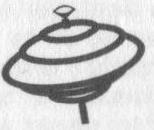

CECILE BAILLY
MALICE

KTM éditions
Le code de la propriété intellectuelle n’autorisant, aux termes des paragraphes 2 et 3 de l’article L. 122-5, d’une part, que les « (...) copies et reproductions strictement réservées à l’usage privé du copiste et non destinées à une utilisation collective », et d’autre part, sous réserve du nom de l’auteur et de la source, que « (...) les analyses et les courtes citations justifiées par le caractère critique, polémique, pédagogique, scientifique ou d’information », toute représentation ou reproduction intégrale ou partielle, faite sans le consentement de l’auteur ou de ses ayant-droits ou de ses ayant cause, est illicite (article L. 122-4). Cette représentation ou reproduction, par quelque procédé que ce soit, constituerait donc une contrefaçon sanctionnée par les articles L. 335-2 et suivants du code de la propriété intellectuelle.
© KTM éditions, 1999
20, rue Saint-Nicolas - 75012 Paris
ISBN 2-913066-01-1
À vous toutes.
Je traîne un moment dans les rues commerçantes. Chaque fois que je vais chez ma sœur aînée, je m’attarde. Cette ville ne changera jamais, elle ressemblera toujours à n’importe quelle cité déserte, grise... La ville de mes années d’écolière puis de mon adolescence, la ville aussi de mes premières amoures et de mes premiers combats. Il y a peu de passants, les magasins sont pâles. Çà et là peut-être une vitrine différente, un jeune platane, une cabine téléphonique passée de pièces à carte... Une cabine. J’ai envie de téléphoner à quelqu’un. Mais à qui ?
Catherine... Tiens, si j’appelais la Cat ? Voyons... Les dernières nouvelles qu’elle m’ait données remontent au Nouvel An. Six mois. « J’espère que comme moi tu trouveras cette année l’amour de ta vie. » Je me demande bien à quoi peut ressembler l’amour de sa vie. François, elle l’adorait pour son côté artiste, évaporé ; elle n’a pas supporté longtemps de l’entretenir. Jean-Mi, c’était pour ses yeux. Et Madjid, et Franck... Cat avait la particularité de tomber follement amoureuse ; c’était une nécessité, d’autant qu’il suffisait d’un regard tendre ou d’une parole gentille pour la faire craquer.
Je souris à la rue vide et à mes souvenirs d’adolescente. J’ai déjà la télécarte en main, son numéro s’inscrit direct dans ma tête. J’ai une mémoire des chiffres étonnante pour une rebelle aux mathématiques et j’en éprouve du coup une fière satisfaction.
03 84 74 12 32. Ça sonne. Une fois. Deux fois. À cinq, je raccroche.
« Oui, allô ! » Un mec.
« Allô, bonjour... euh... Je suis une amie de Catherine... euh... C’est Alice.
— Alice ? Ne quittez pas. » Il me vouvoie, lui ? Woo ! la Cat, qu’est-ce qu’elle nous a dégoté ?
« Allô, Alice ? » Sa voix rieuse, je l’avais presque oubliée. Trois ans qu’on ne s’est pas vues.
« Catherine, alors, ça va ?
— Et ouais ma grande ! Et toi ? Dis, j’attends encore ta carte postale !
— Tu m’connais... Ben tu vois, j’ai pas vraiment changé... Dis, je suis pas loin de chez toi là, je bouffe chez ma frangine. On pourrait se voir ; ce serait l’occasion...
— Génial, pourquoi pas ? Euh... attends. »
Elle pose bruyamment le combiné, ça craque à mon oreille. Elle demande sûrement à Machin s’il est d’accord qu’une vieille copine passe boire le café, comme ça, un samedi de juin, alors qu’il fait beau dehors...
« Alice ? Bon. Je dois m’absenter pour le repas. En fait, je serai de retour vers 3 heures, ça roule ?
— Ça l’fait.
— Alice... j’ai un super truc à t’annoncer. Pas maintenant, je te raconterai tout à l’heure.
— Non. Dis !
— Tss, tss ! Allez ma grande, j’t’attends. Ça m’fait plaisir.
— À plus, Cat. »
Je repars le cœur léger, le sourire aux lèvres. Je vais revoir la Cat, ma bonne copine de lycée. C’est une pensée agréable. Je ne l’avais pas prévue, ça donne des couleurs au paysage. Tiens, ils ont mis un nouvel Abribus ici.
Je marche dans cette rue glauque d’une ville qui n’est ni vraiment au Nord, ni tout à fait à l’Est. Une ville bâtarde. Par habitude mes pas me mènent au Striker, le bar le plus branché de ce trou. Branché, mais pas entre midi et deux. Je pousse la porte vitrée couverte d’affiches et rejoins le comptoir. Trois ou quatre clients. Jean-Luc, le barman, me reconnaît vaguement :
« Salut, tu prends quoi ?
— Un Ricard. »
J’observe. L’une de mes activités favorites. La clientèle se fait rare, hormis deux nanas qui boivent un café au fond de la salle et un type looké rocker qui lit le journal local en sirotant un apéro. J’observe sans conviction, je n’ai décidément pas le feeling aujourd’hui. Je n’aime pas ce parfum de morosité. Je suis ailleurs ; mon esprit est torturé par la scène que ma sœur et moi venons de nous jouer. C’est épuisant, les rapports humains... Mon verre est vide.
« Tu m’en remettras un deuxième ?
— OK. »
Le barman n’a pas changé. À l’étincelle qui passe dans ses yeux lorsqu’il me répond, je sais qu’il a capté là une ancienne habituée qui consommait déjà du Ricard auparavant.
« Jean-Luc ? Tu te souviens d’une meuf qu’on appelait la Cat ?
— Tu parles, elle vient toujours, ici.
— Ah ouais ? Tu l’as vue ces jours-ci ?
— Hier. Tiens les filles, là-bas, c’est des copines à elle. »
Je pivote vers les potes de la mienne. La blonde me tourne le dos ; je ne les ai qu’entr’aperçues tout à l’heure. La brune, par contre... Je la dévisage plus précisément. Oui, c’est une belle femme. Mon âge, peut-être à peine plus. Son visage —je suis trop loin, c’est con –, un visage sombre du Sud, un visage aux expressions un peu figées, aux traits fins mais francs, des yeux étirés étrangement beaux... des cheveux noirs épais relevés derrière sa tête. Une bouche longue et tragique. C’est ça, elle a un air tragique.
« Comment elle s’appelle ?
— Qui ça ?
— Ben, la brune... et l’autre. C’est quoi leurs noms ?
— La brune, c’est Barbara. Et sa copine, c’est Anne-Marie. C’est des profs. »
Barbara. Des profs. Attends, cette perle s’appelle Barbara ? Woo ! Trop beau. Prof... en plus, ici, dans cette ville bidon.
« Ça fait longtemps qu’elles viennent ici ?
— Depuis l’année dernière, à la rentrée. Anne-Marie est de Clermont-Ferrand et Barbara, d’Avignon je crois. »
L’évocation d’un lieu dont je m’étais sentie jusqu’à maintenant l’unique véritable conquérante déclenche un frisson à peine violent le long de ma colonne.
« T’en es pas sûr ?
— Bah ! Barbara, pour savoir quelque chose... Pas le genre à se laisser aller aux confidences. Même ses copines, elles sont pas trop au courant de sa vie. »
Bon ! Cette Barbara m’apparaît intéressante. Par chance, ce Jean-Luc de barman aime discuter. Je ne suis pas en chasse à proprement parler, cependant j’ai une attirance obstinée pour les individus singuliers. Je l’observe encore ; elle économise les gestes, à l’inverse de son interlocutrice. De quoi peuvent-elles parler ? Brutalement, je croise son regard. Elle me voit, plante deux yeux froids au fond des miens et se retourne. Je baisse la tête, un peu secouée. Je prends une gorgée de Ricard. Mon regard furète à nouveau autour du bar pour revenir sur elle, attiré, aimanté, poussé et se poser là. Elle est manifestement belle. Elle me plaît mais pas seulement pour l’esthétique. Non, elle dégage autre chose. Quelque émotion aspirante, inspirante. Elle me dérange presque. Son histoire – sa non-histoire – m’intrigue. Cette blonde en face d’elle m’agace. Et dire que ce sont des copines de la Cat !
Je pourrais me lever, aller vers elles et leur dire « Hello, je suis une vieille copine à la Cat, paraît que vous la connaissez ? » ; je pourrais aussi attendre l’heure de retrouver la Cat et faire en sorte de l’attirer ici... Non, trop compliqué. Les deux copines risqueraient d’avoir quitté les lieux. Je pourrais aussi payer leurs consos, ça ferait mystérieux... Elles se demanderaient bien pourquoi une inconnue leur offre à boire.
« S’il te plaît, combien je dois ?
— Deux Ricard, vingt-huit.
— À une prochaine. »
Je fuis. Ceci dit, pourquoi ? Je voudrais rester, faire ma belle, sûre de moi, de mon charme, faire de nouvelles rencontres... Je fuis. Je trace une troisième fois depuis 11 heures ce matin dans les rues commerçantes désolantes de mon ex-cité. J’ai meilleur temps d’aller chez la Cat et l’attendre devant chez elle. Il fait beau, après tout, c’est déjà ça.
J’entame une remontée de la rue principale en direction du quartier haut quand je me rétracte : je vais aller reprendre ma voiture sur le parking du Prisunic, ça me fera passer le temps. En fait, je sens que cette ville m’ennuie, comme d’habitude ; je voudrais faire demi-tour, mais une force m’y retient. Sans hésiter je suis cette intuition et traverse la ville d’une façon que j’espère définitive. Il y a un P.M.U. à côté du Prisu. J’y prends un Ricard – le dernier – vite fait sur le zinc – de l’alu en l’occurrence. Huit francs. Tiens, les bars branchés, ça se paye aussi dans ce pays !
Ma bagnole n’a pas bougé. D’ailleurs, je ne vois pas pourquoi elle aurait bougé. Je m’installe au volant, respire un grand coup et passe mes mains dans mes cheveux trop courts. Je me rassemble un peu. Cool.
« Alice !
— Cat... »
Il est pile 15 heures. Elle a cet éternel visage réjoui encadré par des boucles rousses en ressort. Je ne me souvenais plus qu’elle ne m’arrivait qu’à l’épaule.
« T’as encore grandi, Alice ! dit-elle en m’embrassant dans un éclat de rires. Viens que j’te présente... »
Elle me pousse presque dans le pavillon, j’ai à peine le temps de lui rendre son bisou que déjà je suis dans un petit salon tout neuf, tout rotin, à peine bab fonctionnarisé. Trois personnes sont confortablement assises dans cette pièce. Elle est là. Je tremble.
« Anne-Marie, Michel, Barbara. Ma copine de lycée : Alice.
— Bonjour m’sieur dames.
— Salut. »
Personne ne mentionne le fait qu’on s’est déjà vues quelque part, il me semble.
« Anne-Marie et Barbara sont des collègues à Michel. Ils devaient se retrouver cet après-midi pour préparer un voyage. Michel est prof, j’t’avais dit ?
— Eh non, tu me l’avais pas dit ! T’as relativement souvent flashé sur les profs, toi, déjà en seconde...
— Chut ! plaisante Catherine, il ne sait rien ! »
Michel sourit. Il a l’air sympa.
« Quelle matière ?
— Anglais.
— Et... les collègues ?
— Idem. Ils organisent un séjour d’une semaine en Angleterre avec leurs élèves.
— Ah ? C’est chouette ça.
— Suis-moi à la cuisine, Alice, on va lancer le café. Pendant ce temps, ils pourront commencer à bosser. »
Je lui emboîte le pas. Une ambiance sympathique tournoie dans cette maisonnette. On ne se la joue pas trop, ça discute tranquille.
« Alors, Cat, t’avais une nouvelle ?
— Ouiiii... ! !!
— Vas-y, je suis tout ouïe.
— Trois mois.
— Non !
— Si !
— Extra !
— Tu m’étonnes, on essaye depuis qu’on s’est rencontrés. Michel est formidable, tu verras.
— Sûrement une fille, je gazouille.
— Oh toi, tu changeras pas ! »
Je l’embrasse en riant. Ses cheveux sentent le monoï, comme avant. Il y a des parfums qui nous saisissent à des instants ; ces odeurs caractéristiques qui ont embaumé et jalonné notre histoire. Il est bon de se laisser chavirer un dixième de seconde.
« Et... ses copines ? Sympas aussi ?
— Ouais, cool et tout. Anne-Marie est plutôt marrante, y paraît qu’elle drague le proviseur. Une coureuse, pas coincée malgré son look secrétaire de direction.
— Et Barbara ?
— Elle te branche, hein, Al ?
— Woo !...
— J’te connais, va ! La mère Florin, la prof de français en première, tu trouves pas que c’était le style, hein ? Tu l’avais dans la peau, celle-là ! Et la ténébreuse Natacha, la redoublante, celle qui cassait la gueule à tes meilleures copines... Quand j’y pense, j’ai eu de la chance, moi, de ne pas me faire massacrer.
— Arrête...
— Tu vis seule, à Lyon, Al ?
— Ouais... quand j’y suis. Tu sais, j’ai autour de moi cinquante copains chez qui aller.
— Et côté cœur, encore branchée nanas ?
— Yé né pas chandjé ! Depuis que j’y ai goûté... J’ai commencé par là ; on dit qu’on revient toujours à ses premières amoures... Ma période hétéro —je devrais dire bi ! – a été courte ! J’ai vite repris la route dans mon sens... Toi, t’as jamais cédé, pourtant, merde, tu m’aurais plu !
— Plus maintenant ? »
Elle rit et reprend avec un ton solennel :
« Moi, j’voulais un gosse.
— Ça n’empêche rien.
— Avoue que ça facilite pas les choses. J’ai bien fait de persévérer : j’ai fini par trouver Michel.
— C’est vrai que t’as l’air heureuse, ma Cat ! Attends que je te regarde mieux : heureuse et belle. Au fait, tu bosses ou t’as laissé tomber pour ta petite famille ?
— J’ai démissionné. Je m’emmerdais dans cette agence de voyages. On n’est pas difficile, on a assez avec ce que gagne Michel. Tu m’aides ? Tu prends les tasses ? »
J’empoigne le plateau et nous retournons au salon.
« Le café ! »
C’est indubitable : Catherine est simplement radieuse. Elle papillonne au milieu de son monde. Je m’assieds à côté de Barbara, à une respectable distance néanmoins et avec appréhension. Catherine ne m’a pas appris grand chose sur elle.
Récapitulons : elle est prof d’anglais – bon point pour moi –, elle a environ trente ans – oui, à la voir de près, si près, je pense qu’elle est à peine plus âgée que moi — ; elle est avignonnaise – troisième point. Je n’ai pas entendu le son de sa voix.
« Ah, j’ai oublié le cake ! »
Catherine repart joyeusement dans la cuisine. Avec tout ça, moi, je n’ai rien avalé. Pas depuis tôt ce matin. Le cake tombe à point. Je me rue dessus sans politesse, Anne-Marie se marre, Cat aussi.
« T’as pas eu à manger chez ta sœur ?
— Ben non, justement. »
Merde, ma sœur. J’avais déjà oublié. Pouah, la la ! comment je vais rattraper ça ?
Mon passage chez elle a franchement mal tourné. Au moment de nous mettre à table, je l’ai sentie très tendue. J’ai d’abord mis ça sur le compte d’un surmenage dû à une vie sérieusement amputée par des heures de boulot, puis très vite je me suis rendue à l’évidence que c’était moi, le problème. Ma sœur a lâché d’un ton sec :
« Bon, on va bientôt manger ; il est 1 heure et on ouvre à 2.
— Et moi, j’ai rancart cet après-midi, ai-je sottement renchéri. »
C’est là que les choses m’ont dépassée. Angèle a verbalement bondi sur moi.
« Rancart ? Où ça ? Je croyais que tu restais le weekend ! »
Le week-end ! Ça m’était rarement arrivé depuis que chacune avait quitté le domicile familial. Interloquée, je l’ai suivie dans la cuisine.
« Écoute, Angèle. Je n’ai jamais eu l’intention de passer le week-end. J’ai prévu d’aller chez la Cat cet après-midi. Tu te souviens d’elle ?
— La Cat ? Elle est restée ici ?
— Elle habite sur le haut, vers chez maman.
— Tu l’as pas vue depuis quand ?
— Trois ans à peu près. Elle vit avec un mec, maintenant. Ça a l’air d’être l’amour fou !
— C’est drôle, je la croise pas en ville. »
Angèle s’était radoucie mais je sentais en elle, à travers ses gestes nerveux et son front plissé au-dessus de ses yeux pâles, un énervement contenu.
« Elle bosse chez un tour-opérateur je crois.
— Et c’est qui son mec ?
— J’ai pas d’éléments sur ce sujet. Tiens, je sais même pas comment il s’appelle !
— Ils t’attendent pour quelle heure ?
— Ben... j’irai quand vous ouvrirez le magasin.
— Ah.
— Ça t’embête ?
— Non, non. »
Ça l’embêtait à mort. Mais pourquoi ? Elle rien à me dire et elle voulait que je reste ! Pour garder Caro ? S’il n’y avait que ça, je l’emmènerai, la Caro. Je penchais plutôt pour l’hypothèse qu’elle avait quelque chose de grave à m’annoncer. J’ai embrayé :
« Sinon, t’as des nouvelles d’Annabelle ? »
Je me suis souvent demandé pourquoi notre mère nous avait toutes donné un prénom commençant par un par un A. Amour, Anarchie...
« Anna ? Elle est toujours à La Rochelle avec Patrice. Rien de spécial. On passera les voir en août. Et toi, tu fais quoi pendant les vacances ?
— Je sais pas encore... »
Ce qui m’échappait surtout, c’était quand est-ce que j’allais les prendre, ces putains de vacances. J’avais une somme de travail en retard.
« Tu sais, Angèle, j’ai pas mal de boulot. Si ça se trouve, je décalerai les grandes vacances en automne.
— T’es folle ! J’pourrais pas. Dis, pourquoi tu passerais pas un Capes ou un truc comme ça ? Tu serais tranquille si t’étais prof.
— Justement, j’ai pas envie.
— Ça ferait plaisir à maman.
— Pas à moi, Angèle. Ce que je fais me convient.
— Ouais, seulement t’as aucune garantie. Le free-lance, excuse-moi, ça n’assure rien.
— Au moins je voyage !
— En empruntant des sous à ta mère ! »
Woo ! Là, elle attaquait. Elle savait pourtant combien je suis sensible sur les histoires de famille. Ça montait dans ma gorge. Je rêvais de m’enfuir en courant, en pleurant que personne ne m’aime. Je passais ces quelques secondes d’émotion et tentais de calmer le jeu.
« T’inquiète, je vais lui rendre. Ce que tu ne sais pas, c’est que c’est elle-même qui me Ta proposé.
— Ça, en te sachant dans une caravane, en hiver, sans chauffage et en poste restante, elle avait des raisons de s’inquiéter !
— Ça va, c’était pas si dramatique. C’est bon ! Maintenant j’ai un appart et de quoi la rembourser. Tiens, d’ailleurs, je fais tout de suite un premier chèque de 5000 balles. »
Le ton a monté.
Je suis retournée au salon. Philippe mon beauf et Mourad – un mec du quartier dont j’ai, à son insu, fréquenté la sœur pendant mon année de troisième – étaient à table avec les gosses, devant un ersatz de Karaté Kid. Ils rigolaient, buvaient des whiskies et les gamins s’engueulaient. J’ai pris mon vieux sac en toile de l’armée US et suis revenue à la cuisine. Angèle me tournait le dos.
« Je disais pas ça pour ça, Alice. Sache que maman n’est pas bien du tout.
— Ne me dis pas non plus que c’est à cause de moi ?
— Tu n’y es pas pour rien quand même. Ça la panique de voir que tu as une maîtrise d’anglais et que tu passes ton temps à zoner. Elle est au courant de rien de ce que tu fais, elle connaît aucun de tes amis. Pour nous c’est pareil, d’ailleurs.
— Angèle, j’y peux quoi, moi. Maman se sent seule, c’est pour ça qu’elle est mal. Je suis pas responsable, merde ! Et ça veut dire quoi je zone, hein ?
— T’as pas un boulot fixe, tu galères, tout le monde le sait !
— Mais vous faites chier à la fin ! Je fais comme j’ai envie ! J’emmerde personne, bordel ! Et mes potes,
20 qu’est-ce que vous en avez à foutre de mes potes ? ! Vous les détesteriez, déjà que vous me détestez, sans savoir pourquoi ! Tiens, voilà ton chèque, tu le feras passer à la mère. Ciao. T’as qu’à donner ma part à Mourad, j’ai plus faim. Je reviendrai quand ce sera calmé. »
J’ai osé.
Je suis sortie, rouge jusqu’aux oreilles. J’ai claqué mes godasses par terre en descendant les escaliers, j’ai claqué la porte en bas. Il était 13 h 30, les rues étaient irrémédiablement vides.
Bon ! Essayons de ne pas y penser. On est bien ici, les gens ont l’air sympas. Il fait doux, le cake est à point, le café est pur arabica, Cat est prévenante :
« Dis, si t’as faim, y a pas de problème, Al.
— OK.
— D’ailleurs, ça tombe à pic, ajoute Michel. J’ai un stock de scones que j’ai fait avec les gosses au centre social. On pourrait se les tartiner ?
— Ah ouais, bonne idée ! »
Cool la vie. Le joint que vient de faire tourner Michel me détend. J’ai un désir léger de parler de choses gaies, de rire, de regarder cette belle Barbara, de passer un après-midi délicieux avec ces braves profs un rien babas. Je me sens en pleine poussée conversationnelle.
« Alors vous êtes tous fonctionnaires de l’Éducation nationale. C’est bien, ça c’est un job.
— Tu sais, on est des jeunes profs pas complètement désillusionnés. J’espère qu’on ne le deviendra pas trop vite ! rigole Michel.
— Et toi ? demande Anne-Marie.
— Moi, j’ai jamais tenté le Capes.
— Je veux dire : tu fais quoi dans la vie ?
— Ben... je suis plutôt en free-lance.
— Alice a toujours eu du mal à se fixer ! »
Ça, c’est Cat qui se marre.
« Je suis patiente, Cat, te fais pas de souci... Je tourne avec des traductions, je donne des cours occasionnellement, en France, ou ailleurs... Je m’dé- brouille, j’me promène... »
Je n’ai pas levé les yeux de mon café en disant cela. C’est terrible, cette timidité lorsque ce n’est pas moi qui pose les questions.
« Quelle langue ?
— Anglais surtout.
— Original ! »
Catherine se colle à son Michel. Il est brun, grand, costaud, à peine barbu, boucle d’oreille. Il doit plaire à ses élèves, celui-là. Il fume la pipe, n’est pas du style à cracher sur une roulée. Anne-Marie fait beaucoup plus « ville », plus cadre dynamique, avec son pantalon à pinces écru et son chemisier brun échancré juste ce qu’il faut. Elle arbore une tignasse blonde qui tient en place sans faute au-dessus de son visage pâle et malicieux. Catherine est restée une jolie fille que sa petite taille réjouit, avec de belles fesses rondes dans ses jeans moulants. Elle a accroché à sa bouche humide un sourire béat, ses yeux brillent et éclairent les taches de rousseur qui criblent sa bouille de jeune femme qu’on dirait tout juste sortie de l’adolescence. Et Barbara... elle est belle. Elle est fringuée sobrement, sombrement. Ses cheveux se défont un peu sur sa nuque. Son teint est très mat, son regard souvent suspendu dans le vide. Longue et fragile. Je scotche sur ses mains, fines, ni abîmées, ni baguées. Musicienne ? Peintre ? Je la voudrais artiste. Prof et artiste.
« Alice, tu penses rester plusieurs jours ? Parce qu’au cas où, y a moyen de te loger.
— Oh ! c’est sympa... Écoute, à l’heure qu’il est, je ne sais pas. J’vais voir. On en reparlera plus tard, OK ?
— En plus, on a prévu d’aller au resto ce soir, rappelle Michel. Si ça te dit, viens avec nous !
— Ça, je peux, c’est sûr. Où ça ? Dans quel resto ?
— Au Tapas. »
Je me retourne lentement. C’est Barbara qui a parlé. Une voix feutrée, grave. Comme son visage. « Au Tapas. » Je la regarde. Elle ne me regarde pas.
« Le Tapas ? C’est à Avignon seulement, le Tapas. Ou alors en Espagne. »
Elle ne bronche pas. J’ai pourtant parlé d’Avignon...
« Barbara est d’origine espagnole, renchérit Catherine – décidément, elle répond souvent à la place des autres. Et nous, on adore ces ambiances.
— Depuis quand on peut manger espagnol ici ? je m’enquiers.
— Pas ici mais à trente kilomètres. C’est là qu’habite Barbara, d’ailleurs. Tu penses que ce n’est pas dans ce bourg qu’il y aurait un resto génial ! Faut aller à la mégapole, pour ça !
— Cette ville m’a filé le bourdon du jour où ma mère a choisi de s’y installer. Comment vous faites pour vivre ici ?
— On a une conception du monde un peu restreinte, plaisante Michel. N’empêche que je me sens plus utile au quartier entre le collège et le centre social avec les gosses que sur les routes. Remarque, j’y ai cru à un moment.
— Voilà un mec qui assure. Il est bien ton homme, Cat. J’suis contente.
— Et toi, tu vis où ? »
Cette Anne-Marie est curieuse. Par contre, Barbara s’est tue depuis que je cause. Elle aura dit « Au Tapas. » Et puis stop. Silence.
« J’ai un pied-à-terre à Lyon et une caravane à Avignon.
— Avignon ? Tu m’avais pas dit...
— Eh, Cat ! Je peux pas tout raconter d’un coup ! C’est une vieille histoire... Mais effectivement, j’ai une caravane près d’Avignon. En cas de panique, ça peut servir. Dites, j’en roule un deuxième ?
— Qu’est-ce que tu as de bon ? demande Michel, connaisseur.
— De l’herbe, j’en ai dans la bagnole. »
Œillades de connivence.
« Va pour de l’herbe, chez nous on n’ose pas trop en faire pousser... On voudrait pas être repérés, tu vois, avec mon boulot... »
Je vois. Je sors chercher mon enveloppe. Dehors l’air est chaud. Ma voiture est une véritable fournaise. J’ai le cœur qui s’accélère. Cette Barbara a un côté vraiment énigmatique qui m’attire. Je prends l’enveloppe – mal —planquée dans les garnitures de la porte avant passager et reviens vers la maison. Ils ont un petit potager. Des fraises. J’en engloutis une poignée, elles sont brûlantes et fondantes. Je pénètre sans bruit dans la fraîcheur de la maison. En approchant du salon, je tends l’oreille. Parlent-ils de moi ? Je perçois la voix d’Anne-Marie.
« Elle serait pas un peu dealeuse, ta copine, Cat ?
— C’est une grosse fumeuse...
— Catherine, il est déjà 16 heures. On va se mettre au travail. Faudrait qu’on parte d’ici pas trop tard. »
J’entre, reprends ma place, fais le joint, et nous le fumons en causant de choses banales à souhait. Barbara s’exprime peu. Elle a pourtant une belle voix. Enfin les profs vont s’installer dans une autre pièce. Cat me regarde en souriant.
« T’as l’air crevé, ma belle. Dis, tu fumes pompier, ou quoi ?
— Je fume pas mal... Ça aide.
— Tu veux te reposer un moment ? On risque de veiller, ce soir.
— Ah ! ça ouais, c’est cool. Je dormirais bien une heure. Tu me réveilleras ?
— OK. Dans une heure. Viens dans la chambre d’amis... la future du bébé. »
Elle rayonne, ma Cat. Elle me fait un bisou avant de me laisser, complètement molle, épuisée de rien, épuisée par habitude.
« Bonne nuit, ma grande.
— Dans une heure, hein, Cat. »
Je m’endors direct.
J’ai chaud, je transpire. J’ai la tête lourde côté droit. J’ouvre un œil. Deux. C’est assez flou. Puis ça se précise. Une pièce plutôt petite, je suis dans un grand lit. La porte est entrouverte, j’entends des éclats de voix. Je me soulève sur un coude, me gratte la tête. Où en sommes-nous ? Je cherche des yeux un réveil, une pendule, ou quelque autre objet susceptible de me renseigner sur la question du temps. À cet instant, un bruit de pas feutrés qui s’approchent effleure mon oreille. Presque aussitôt, Barbara se dessine dans l’encadrement de la porte.
« Tu as dormi quatre heures. »
Elle me dit cela, le sourire en prime. Sur son visage sombre, ça donne ! Je mens.
« J’arrive pas à calculer. »
J’ai envie d’ajouter « Barbara » ; le mot ne sort pas de ma bouche, comme si j’allais l’abîmer en le prononçant.
« Soit tu te lèves, soit tu te rendors pour une nuit entière.
— Merde, et le resto ?
— On part dans dix minutes. »
En même temps que sa phrase meurt, elle recule discrètement et s’apprête à fermer la porte en me laissant seule.
« Barbara...
— Oui ? »
Elle s’arrête, me regarde. Ses yeux...
« Euh... Non... Rien... Je... je crois que j’ai de la fièvre.
— Tu as de la fièvre, c’est certain. J’ai touché ton front tout à l’heure. Si tu veux rester ici, je vais voir avec Catherine.
— Non, je veux aller avec vous. »
Elle a touché mon front ! Et moi, l’idiote, je n’ai rien senti ! Je dormais ! Telle la nulle, la paresseuse, la dissolue, je pionçais ! Barbara est repartie. Je me recompose un peu et me dirige vers le salon. Ils en sont à l’apéro. Tiens, il y a un autre mec.
« Ah, Alice ! Viens qu’on te présente Pedro, prof d’espagnol au collège.
— Salouté.
— Salut. »
C’est genre hidalgo, bien roulé, belle gueule. Méfiance, il est frime. De toutes façons, dès que je suis en face d’un mec, rien à faire, je joue les méfieuses, je jauge, je guette si l’égalité des sexes est aussi un de ses principes majeurs ou s’il cherche la drague d’emblée.
« Tu prends un apéro ou tu préfères un bol de café ? »
Ce Michel est très drôle.
« Je vois qu’il y a du Ricard, ça me va. »
Je m’apprête donc à sortir bouffer avec ces gens que je ne connais pas. C’est pour Barbara que j’y vais. Pour l’instant je l’écoute car elle parle.
« Vous n’aimeriez pas assister au festival ? Ça vaut le coup, une fois dans sa vie. À Avignon, j’ai de la place ; je pars en Espagne avec ma famille début juillet. Vous pourriez vous installer chez ma mère.
— C’est sympa, Barbara, mais sans toi...
— Oh, moi, tu sais, le festival...
— Et tu vas où, en Espagne ?
— Barcelona. »
Barcelona. J’entends Freddie Mercury répondant à Montserrat Caballe. « Barcelona ! ». Pourquoi elle est pas prof d’espagnol, cette Barbara ?
« Alice, tou es dé la régione ?
— Plus ou moins, ouais, ma sœur, ma mère...
— Y tou connais Michel y Cathérine...
— Cat, surtout.
— Ah, d’accord. »
Ce Pedro cherche à causer, moi pas.
« Bon, les amis, on s’arrache ?
— On y va.
— Dis, Cat, je prends ma caisse...
— Tu crois ? Barbara a la sienne, elle reste là-bas, nous on te ramènera. Pas la peine de partir à trois voitures. Moi, je ne bois plus. Je pourrai ramener tout le monde.
— Bon. »
Y a pas grand chose à dire quand les autres organisent avec autant d’aplomb. N’empêche, j’aime bien avoir ma bagnole pas trop loin lorsque je sors. Je me sens plus libre. C’est bassement matériel ; je n’ai pas toujours l’âme en élévation.
J’aurais été comblée de faire le voyage avec Barbara, mais Cat m’accapare et me veut avec elle. J’ai les boules. Anne-Marie et Pedro se collent dans la 205 de Barbara tandis que je me cale à l’arrière de la R19 de mes hôtes.
Le resto est plutôt convivial. Rien à voir avec les bodegas espagnoles ou du Sud de la France, mais plaisant néanmoins. Être six à table au resto, ça incite bêtement, d’emblée, à parler fort et à se faire remarquer. Putain de société. J’ai parfois envie de ne pas être membre du groupe. Des groupes.
On boit et on mange : poulpes à l’ail, papas sauce diable, gaspacho... Le Rioja, très frais, descend aisément. J’ai retrouvé la pêche ; cette sieste m’a fait un bien fou. Je suis assise entre Pedro et Barbara, face à Cat. On cause de ci, de ça.
« Et c’est prévu quand, votre sortie pour la terre des Angles et des Jutes ?
— Voyons... on est le 3... dans dix jours, me répond Michel, joyeux.
— Quel coin ?
— London City !
— Vous êtes au point ?
— Presque... il manque un accompagnateur. Sinon, tout est OK. »
Cat me regarde, regarde Michel, me regarde à nouveau.
« Tu fais quoi, toi, Al, ce mois-ci ?
— Euh, moi ? Ben...
— Dis, Michel, s’empresse-t-elle. Tu devrais lui proposer ; elle a une maîtrise d’anglais... »
Tous les yeux se tournent vers moi. Je suis mal. Anne-Marie a froncé les sourcils, je l’ai vue. Barbara a de suite détourné les yeux. Personne ne dit rien. Pedro, lui, semble s’en foutre. Il boit du Rioja et m’en ressert. Michel finit par se frotter le nez et :
« Faut voir... »
Pas enthousiaste le mec. Moi, ça me plairait de passer une semaine tous frais payés pas trop loin de cette Barbara, histoire d’en savoir d’avantage. Et puis, ça doit être marrant des collégiens à Londres. Je brise le tour gênant qu’a pris la conversation pour redonner un ton jovial à la soirée :
« Moi, je finirais bien avec un kawa.
— Bonne idée, enchaîne Anne-Marie. »
Celle-ci est partie pour la nuit. J’irais volontiers en boîte dans ce bled : je n’y connais pour ainsi dire personne et j’ai une grosse envie de danser, de m’éclater la tête avec des sons ultraspace.
Je me lève pour commander les cafés. Ça me détend de dérouler un peu mes cannes nerveusement entortillées sous la table depuis le début du repas. Je n’aime pas spécialement rester assise. D’emblée, je branche le serveur :
« Y a des boîtes, dans le coin ?
— Ah ça oui, y en a ! Quel style ?
— Bonne miouse, ambiance j’m’éclate...
— Le Phélix, quai Ronsard ; la Souris en allant vers l’Euromarché. Le Bowling et le Boy’s.
— Le Boy’s ?
— Ouais ! eh, eh !... »
Il ricane, le pauvre. Ça m’énerve. Alors, y va me dire où c’est ?
« Y a un show transformiste le samedi soir, si c’est ton style !
— OK, et c’est où ? »
Il me scrute de la tête aux seins puisque le reste est caché par le bar.
« En sortant à gauche. Troisième à droite. »
Il me fait un clin d’œil. Il m’a indiqué la boîte comme on indique les chiottes. Je vais me rasseoir, en profite pour frôler l’épaule de Barbara. Café. Pousse. Michel :
« On va bientôt se rentrer, ma chérie ?
— Humm !... »
J’hésite. Le cœur à cent à l’heure. À part Cat, personne ne doit être au courant de mes amoures, et je n’aime pas m’afficher. Quand je pense que ma propre sœur ne sait rien ! Pff, c’est fatigant. Allez, lance-toi.
« Ça vous dirait d’aller ailleurs ?
— C’est oune bonne idée ça, si pourquoi no ? »
Merci Pedro, merci mille fois ! Anne-Marie :
« Le problème, c’est où aller ? Danser, ici, ça craint. Y a que les pédés qui ont une boîte sympa. »
Elle se marre.
« Et alors, je réponds brusquement. C’est pas interdit d’y aller !
— Tu veux aller là-dedans ?
— Bien sûr que j’y vais.
— Ma pauvre, on voit que tu ne connais pas, les folles te laisseront pas rentrer ! Il faut être connu.
— Tu paries ? »
Cat essaie de ne pas rire. Cette Anne-Marie-je-sais- tout m’énerve.
« Tope-là. »
On tape les mains. Dans l’euphorie, je me lève gauchement, renverse ma chaise, m’excuse auprès de Barbara à qui j’aimerais tant plaire, qui me regarde à peine et qui a l’air d’avoir passé une soirée mortelle.
« Attends, Alice. »
C’est Michel.
« Ouais ?
— On a pas la frite pour aller en boîte, nous.
— Tu vois, j’aurais dû prendre ma tire, Cat.
— On va trouver une solution. »
Cette histoire commence à me gonfler. Je voudrais planter tout le monde. Sans voiture, quelle galère...
La solution s’appelle Barbara :
« Alice et Anne-Marie peuvent dormir chez moi...
— Mais, y a déjà Pedro...
— Y a de la place. »
Pedro... je ne m’y attendais pas. Pourtant, deux Espingos, profs, jeunes, beaux. C’était d’une implacable logique !
On s’embrasse devant la porte du resto en se disant à demain midi pour manger. On croirait qu’ils ne se quittent jamais, ces fonctionnaires, sous couvert d’un dossier à boucler.
On se met en route. La nuit s’est rafraîchie, ça fait un bien fou de trotter le nez en l’air. Soudain, Barbara annonce qu’elle ne vient pas avec nous et redonne le digicode de son immeuble à Anne-Marie. Pedro renchérit qué loui non plou il ne nous souit pas. Je regarde Anne-Marie :
« Bon, nous, on y va ?
— Eh ! Oui, on a fait un pari ! »
Pedro et Barbara s’éloignent. Je me retourne plusieurs fois alors qu’Anne-Marie me raconte je ne sais quelle histoire abracadabrante sur le Boy’s.
« Et si on entre, comment tu envisages la suite des opérations ? »
Elle m’énerve sérieusement, ça me démange de la battre.
On arrive. Club homo normal, pas de quoi en faire un fromage. La folle à l’entrée, le vestiaire obligatoire à 10 balles. Anne-Marie me colle ; je la sens effrayée et excitée à la fois. Musique assourdissante, chaleur torride.
« Hein, qu’est-ce qu’on va y faire ? »
Elle hurle à mes oreilles en s’accrochant à mon bras. Ma parole, c’est une obsession. Ou alors, c’est le Rioja.
« Je suis gouine, ma chérie, j’vais pas m’ennuyer ; fais comme moi, tu verras, c’est facile et c’est plutôt mieux ! »
J’ai presque crié. La techno affreusement commerciale accélère quand même mes battements cardiaques déjà affolés par l’effet mixé du vin et du pétard fumé en chemin. Je plonge illico sur la piste où les rires et les cris m’entourbillonnent. Le top, c’est que je ne connais plus personne ici. Je peux me lâcher au maximum, délirer perso sur les tempos. C’est samedi soir, ça sent la sueur, les parfums mêlés et l’alcool ; ça sent le sexe. J’ai passé une main dans le cou d’Anne-Marie. Elle crève sûrement d’envie de sortir en courant, seulement elle a cette terrible curiosité qui la retient. Barbara doit baiser avec son Pedro, j’ai qu’à draguer, ça m’amusera. Et ça amusera au passage cette nase d’Anne-Marie.
*
Aïe ! Ça cogne, là, sur chaque tempe, comme une barre de fer qui traverse mon crâne, juste derrière les yeux. Les yeux. Lourds. Douloureux. Les ouvrir. Un peu. Et puis, petit à petit, par à-coups, le brouillard s’éclaircit dans mon cerveau... Un effort. Le Tapas. Barbara. Merde, Barbara ! Je me redresse brusquement. Trop. Aïe ! L’estomac aussi, la tête. J’ai extrêmement mal à la tête. Je regarde alentour. J’ai dormi dans un canapé qui meuble essentiellement un salon sans prétention, sobre, plutôt clair. Cette lumière me tire les tempes. Je dois être chez Barbara. Je devrais m’y trouver, en tous cas. Je ne me souviens plus.
J’ai entraîné Anne-Marie dans la fumée et la musique. Ça hurlait, je dansais, elle riait. On a dansé, bu, dansé, bu... Je l’ai serrée dans un slow, elle gloussait. J’ai parlé, parlé à Anne-Marie, à plein d’autres gens ; des filles, des gars, des frangins, des frangines. Et d’un coup, plus rien. Quoi ? Le trou noir.
Je me suis souvent réveillée dans des lieux dont je n’avais pas le souvenir de la veille. Dans le cas présent, l’idée de me savoir chez Barbara m’effraie. Où sont les autres ? Pas de bruit... J’ai pas fait de conneries... Je crois pas, j’espère pas... J’ai tendance à aimer le monde entier quand je bois. Je n’ai pu agir que par bons sentiments...
Après ces considérations matinales, je commence par quoi ? J’empeste le tabac froid et la sueur. J’ai encore un sale goût d’alcool au fond de la gorge. Ma tête... Une douche, voilà ce qu’il me faut. J’ai pas la moindre fringue propre. Putain, depuis hier matin, le voyage, la frangine – oh non, la frangine ! – Cat, Barbara, tout ça... et ma voiture qui est restée chez la Cat. Lâcheuse. J’ai laissé mon herbe là-bas et je n’ai plus une miette de shit. Mon seul rechange est aussi dans la bagnole.
Il faut que je me décide. Pas d’heure dans cette pièce. Je vais chercher la cuisine. Pff, je suis paumée. J’ai dormi à poil ? Tiens. Où sont mes sapes ? Là. OK.
Je trouve la cuisine du premier coup. Facile, dans un F2 de centre ville. Personne. Il y a un mot sur la table : « Je reviens avec des courses. » et c’est signé « AM ». C’est même pas Barbara. Je me sens boudeuse. Où est- elle ? Et son Pedro ?
J’avise une bouilloire électrique. Je fouille un peu les placards : un bol, un sachet de thé. Ça ira mieux. J’ai le temps d’inspecter l’appart avec minutie et curiosité pendant que l’eau chauffe : il est sobre, agencé sans réellement de personnalité, entre le meublé et la sous-location. Enfin, quelqu’un se décide à me rendre visite. Évidemment, c’est Anne-Marie. Elle est chargée de croissants, pain et fruits. Je n’ai absolument pas faim. Tout m’écœure.
« Salut belle Alice ! »
J’avoue qu’elle m’interloque : je la sentais nettement avare côté compliments, sèche et frime, sûre d’elle... La voici douce et joyeuse.
« Salut. J’ai du mal...
— On va se faire le méga p’tit déj !
— Tu sais, j’suis un peu barbouillée... »
Elle se marre.
« Tu m’étonnes ! T’en tenais une bonne !
— Me dis pas que j’ai déconné... »
Elle me regarde d’un air malicieux, genre petite chipie. Cette nana a décidément mille facettes.
« Ça dépend de ce que t’appelles déconner !
— Allez, dis. Je suis prête.
— T’as d’abord entrepris de me raconter ta vie...
— Jusque-là, ça va.
— Remarque, intéressante, ta vie. Compliquée. Un peu fouillis.
— Bon, passe.
— T’as fini par la raconter à tout le monde.
— Ouah la nulle. J’me déteste. J’pense qu’à moi. Tu vois, ma frangine, elle a raison. J’ai les boules. »
Je sens la grosse vague de déprime qui va me déferler dessus si je songe à Oh-combien-je-suis-nulle-et- que-la-vie-est-vaine !... Je dois faire une gueule de chien abattu car Anne-Marie essaye de me rassurer :
« Allez, relax. Rien de grave...
— Et après ?
— Après... Euh... T’as un peu essayé de me draguer...
— Oh non, merde ! Oh ! Anne-Marie, je...
— T’inquiètes, c’est pas un drame ! Je t’ai ramenée ici, je t’ai couchée...
— Tu m’as déshabillée ?
— Oui : t’insistais !
— Arrête... Tais-toi... »
Elle s’est enfin assise. Elle commençait à me donner le tournis. Elle me pose la main sur l’épaule, tout en restant à une distance respectable. Cela me fait supposer qu’il n’y a pas de quiproquo, ni d’ambiguïté entre nous.
« Alice, j’ai passé une super soirée. Je te jure. Ensuite on est restées collées une fois au lit. J’avais peur, et finalement je me sentais si bien, tu étais si douce...
— Anne-Marie...
— Allez, je t’embête... Tu t’es contentée de me tenir par la taille.
— Je suis désolée. C’est con, mais je suis trop désolée.
— Moi pas. Alors, on se les fait ces croissants ? »
Et elle joint le geste.
Je me rends compte que l’appétit vient en p’tit déjeunant. Il n’empêche qu’une question me tracasse :
« Et Barbara ?
— Elle a ramené Pedro.
— Ah ?
— Oui, ils sont partis vers 10 heures. Elle devrait bientôt arriver. »
Je rêve d’en savoir plus sur Barbara, mais je ne sais pas exactement jusqu’où je suis allée dans mes palabres avec cette brave Anne-Marie hier soir.
« Tu les connais bien ?
— C’est dur de sonder Barbara. Elle est très fermée. Elle parle rarement d’elle.
— Et Pedro ?
— Oh ! Pedro, c’est un peu le macho. Ils se sont rapprochés au collège à cause de leurs origines. Mais... je n’ai pas l’impression que ce soit le grand amour. »
Elle s’envoie un deuxième croissant.
« L’impression, ou la certitude ? je demande.
— Par exemple, encore ce matin, j’étais réveillée et je traînais au lit. Je les ai entendus se disputer en espagnol.
— Les Latinos, c’est des gens du Sud : ça cause fort. T’as l’impression qu’ils s’engueulent si tu ne captes rien ; si ça se trouve, ils se racontaient des histoires drôles. »
Elle sourit.
« Oui, mais Barbara, c’est pas le genre à crier. Là, tu sentais que ça craignait.
— Et lui ? Il y va, à Londres ?
— Non, lui, il a des cours, il peut pas. Moi, ça me plairait que tu viennes, ce serait marrant ! Je ne vois vraiment pas qui pourrait nous accompagner... Je me passerais bien d’un parent d’élève...
— Tu sais, je suis pas rigolote tous les jours...
— Je suis sûre que ce serait sympa. Et Barbara, ça lui ferait plaisir. »
Elle me regarde par en dessous. La maligne. Bien sûr, je rougis. Mais ça ne me gêne pas tant que ça. Après tout, cette Anne-Marie n’est rien dans ma vie, elle se fout royalement de mes sentiments ou de mes délires... et moi des siens. Soyons zen.
« Barbara ?
— Vous pourriez sympathiser, vous avez deux ou trois trucs en commun...
— Quoi, comme trucs ?
— Avignon, l’anglais, euh...
— Ça fait pas lourd.
— Ah si ! crie-t-elle brusquement. Vous avez la même bagnole ! »
Elle se jette en arrière sur sa chaise et se met à rire, rire, elle rit comme une folle. Elle me fait marrer. Et de la voir écroulée pour rien, gratuitement, par pur plaisir, ça commence à me prendre au ventre, et je ris aussi, je ris, ça fait mal pourtant je ris ! Je lui hoquette d’arrêter, j’ai l’impression que ça ne finira plus jamais, que j’aurai toute ma vie une crampe terrible au ventre, des grosses larmes sur les joues, dans les yeux, les oreilles bouillantes et la mâchoire en constante crispation.
Progressivement, à la façon d’une descente de speed, ça se calme. On se mouche, on s’essuie les yeux, on essaye de respirer, encore un petit hoquet par là.
On n’ose plus se regarder. C’est trop bon, le fou rire.
Je retrouve mon souffle. Mes cordes vocales se réalignent, je parle.
« Ça remonte à loin la dernière fois que j’ai piqué un fou rire sans avoir fumé. »
Anne-Marie se refait une Ricoré à l’eau et me demande soudain :
« Tu crois pas que le haschisch c’est mauvais... Pour le cerveau, je veux dire... À haute dose, j’entends... »
Je la détaille. Elle a de la classe, malgré son côté pouffe qui ressort tellement il est incrusté. La fête de la veille ne l’a pas détruite. Mon verdict est qu’elle est décidément trop sophistiquée.
« Je crois pas grand chose, moi, tu sais... Mais le shit, l’herbe, c’est pas pire que le tabac. Ça aide dans les périodes de grandes questions existentielles... Je me perds vite dans le pourquoi du comment de l’intérêt de ma présence sur terre. Mouais... Le teush, c’est anti violence puisque ça pousse plus à relativiser qu’à contester. Pff... Les débats sur le hasch, c’est un peu chiant, non ?
— Je te demandais ça parce que moi je ne suis pas une vraie fumeuse. D’ailleurs, Cat et Michel ne sont pas non plus de grands consommateurs, ils profitent de l’occase, c’est tout.
— Je pensais que Michel...
— Si on lui en propose, il dit pas non. Il n’en cherchera pas.
— C’est drôle on a vite fait de se monter des bateaux sur les gens rien qu’en les voyant évoluer une demi- journée.
— Tu diras oui, Alice, pour la semaine en Angleterre ?
— Je crois bien... »
J’ai pris une douche, enfilé le peignoir de Barbara – enfin, j’espère que c’est le sien. Il sent bon le propre et le frais. Barbara paraît être très organisée. Il est déjà midi et elle n’est toujours pas revenue. Anne-Marie me rappelle que la Cat nous attend pour manger. Je me dis qu’après tout c’est dimanche et que leur voyage à l’air déjà particulièrement au point.
« Qu’est-ce qu’elle peut bien faire ?
— Avec ce gros nul de Pedro...
— T’y vas fort, Alice. Moi, je l’ai essayé, le Pedro. Pas si mal !
— Coureuse, va ! »
On rigole.
« J’ai pas une fringue à me mettre. »
Au moment précis où je dis « mettre », la porte d’entrée s’ouvre. Barbara. Je me précipite presque. Elle est pâle, les cheveux défaits. Elle est belle. Je ne parviens pas à capter son regard. Je suis sûre qu’elle a pleuré. C’est une sensible, elle doit pleurer. Je voudrais la consoler.
« Barbara...
— Bonjour, Alice.
— Ça va ? »
J’ai pris une petite voix complètement idiote. La sienne est dure. Je m’énerve moi-même.
« Ça ira. Anne-Marie est là ? »
Elle passe devant moi et va dans la cuisine, direct.
« Ah, Barbara ! Dis, t’aurais pas des vêtements à prêter à Alice ? Vous êtes du même gabarit. »
De quoi elle se mêle celle-là ? Je peux faire mes commissions !
« Non, Barbara... »
Je corn’s dans la cuisine.
« Non, c’est bon, j’ai des fringues. Non, non, j’ai besoin de rien ! »
Je suis paniquée. Qu’est-ce que cette imbécile a fait ? Vite, je cours à la salle de bains, m’habille à toutes pompes, record battu, cœur battant. Je remets le peignoir à sa place, plonge encore une fois mon visage dedans en respirant telle une affolée, embrasse une manche et le flatte une dernière fois avant de revenir à la cuisine, fin prête.
« Quand vous voulez, on y va ! »
Merde, j’assure.
À cet instant, j’ai l’air très con. Bidon. Guignol. Clown. Triste. Je vais me décomposer. Un puzzle. Scrash ! Les larmes me montent d’un coup. Je retourne pantelante au salon, prends mon sac, le repose, m’assieds sur le canapé-lit, ne retiens pas ma tête qui dégringole sur mes genoux, mes bras qui viennent entourer mes jambes, mes larmes qui se mettent à couler. Ça va passer. Laisse passer. Cool. Laisse aller. Chiale, chiale... Rentre, ce soir, rentre à Lyon. T’as rien à glander ici, tu le sais depuis des années. Pars pas dans des histoires trop compliquées. Va bosser, gagne des ronds, entretiens tes relations. Fous le camp.
C’est Anne-Marie qui vient me chercher.
« Allez, Alice, on y va.
— C’est ça, on s’casse. »
Je me lève et d’un coup d’épaule dégage sa main qu’elle veut complice et tendre. J’emboîte le pas des deux profs, on ne se dit rien, ni dans l’escalier, ni dans la bagnole, jusqu’à ce qu’on sorte de cette ville. Dimanche midi, une ville, bien qu’en juin sous le soleil, c’est désolant. La bouffe chez Cat m’ennuie par avance, je ne pense plus qu’à rentrer. J’irais bien à la caravane.
Catherine est invariablement joyeuse, Michel suspicieusement sympa. Ça me fatigue presque. J’ai mal à la tête, pour noircir la scène. Le repas se passe lentement, ça cause politique en cette année riche en élections. Encore des millions de cons qui ont voté pour des plus cons qu’eux, mais plus malins. J’ai envie de revoir John et Julien, mes deux amis, mes frères, mes seuls vrais pédés de copains, mes nounours.
Café.
« Cat, je crois que je tarderai pas.
— Tu veux déjà nous quitter ?
— J’ai plein de boulot en retard.
— Tu vas à Avignon ? »
Barbara. Elle me parle, à moi.
« Ben...
— Je fais partie d’un jury d’examen cette semaine à Avignon. Je comptais prendre le train ce soir. Ma voiture n’assure plus sur les grands trajets. »
Non, c’est trop beau. Je bafouille :
« Viens, tu... Je t’emmène, si tu veux. Si, si, je trace jusqu’à Avignon. J’ai une place. No problem. »
Je regarde ma tasse, je gigote un peu. Qu’est-ce que je peux être niaise. Barbara, elle, boit gentiment son café sans la moindre trace d’émotion.
« Je marche Alice. »
J’aime entendre mon prénom dans sa bouche. « Alice ». Quand c’est elle qui le dit, ça sonne beau. Merci maman. Même le côté démodé, je ne t’en veux plus du tout.
« Sur ce, je me reposerais volontiers avant le départ...
— Je t’accompagne à la chambre, Al. »
Cat a sûrement une révélation à me faire.
« Alors, mon Alice, tu nous quittes et tu embarques notre Barbara ?
— J’ai le blues, Cat. Attends, je m’allonge... Woo ! ça détend un max.
— Le blues ?
— Boh ! j’me sens lasse, quoi. J’sais pas. J’ai pas franchement l’impression de faire les bons choix.
— Mais tu les fais.
— Y paraît. Et c’est là que j’mesure ma liberté.
— Exactement... Être libre, c’est choisir, voilà.
— T’as raison, ma Cat. Si j’suis libre, c’est le top, alors ! »
On se sourit.
« Ce que tu n’admets pas c’est que la liberté, ça peut aussi se partager.
— Attends, Cat. Attends. J’ai pas la force. Je suis trop égoïste.
— Et foncièrement seule... Dors, Alice. T’oublieras pas de m’envoyer une carte... d’Avignon. »
Le départ a été donné à 19 heures après que Michel m’ait avoué combien ça l’arrangerait que je les accompagne en Angleterre. J’ai joué la difficile, du genre débordée, réclamée de partout. J’aime me faire désirer, parfois. J’ai laissé planer le doute, je le laisserai planer tant que je pourrai.
Au bout de cent bornes, il me revient que je n’ai aucun support à la caravane pour avancer la traduction. Quand on tire une ligne du Nord-Est de la France vers le Midi, Lyon est le passage obligé.
« Barbara, ça t’ennuierait si on s’arrêtait à Lyon ? J’ai des dœs et mon Mac à prendre.
— Comme tu veux. Moi, je dois être à Avignon pour midi demain. »
Ah ! mais ça change les données... On pourrait carrément passer la soirée... la nuit, à Lyon, chez moi ! Je n’ai rien à perdre, je n’ai donné ma parole à personne pour quoi que ce soit. Néanmoins, ça me fait un peu peur quelque part. C’est vrai que Barbara ne cause pas beaucoup. Pas d’elle, en tous cas. Elle connaît l’Angleterre aussi bien que l’Espagne. On plaisante un rien, je l’épate en baragouinant des restes d’espagnol et des fragments de vers d’un poème archiconnu. Je crois qu’elle m’aime bien. Elle est fan de littérature anglaise, me cite Shelley, Larkin ou Joyce. Là on se retrouve sur un terrain conquis par l’une et par l’autre et sur lequel nous exprimons mille idées et sentiments.
J’arrive à l’observer lors des instants que je vole à mon attention routière : elle est belle, le soir, dans le crépuscule de l’autoroute, dans ma bagnole. Je suis heureuse. Elle m’allume mes cigarettes, paraît détendue. Ses longues jambes s’étirent sous la boîte à gants. Régulièrement nous fumons en silence. Pas de radio. Que le bruit du moteur et le sifflement des voitures qui nous doublent, pressées. Je conduis avec souplesse. Et si on tend vraiment l’oreille, peut-être, le battement de nos cœurs...
Lyon s’avance à grandes enjambées. Déjà les usines, déjà les cités, déjà le Rhône. Déjà mon bon vieux quartier. Je me gare au 28. En plein devant le porche. Je lui ouvre sa portière, on monte. Je vais pouvoir enfin me changer, le pied.
« Installe-toi, Barbara. Si on repartait que demain ? Je suis out... »
Je dis cela en m’éloignant vers la salle de bains d’un air faussement nonchalant qui cache si mal ma maladive timidité. J’ouvre les robinets de la baignoire à fond et n’entends pas ce qu’elle me répond. Je ne veux pas entendre. Peur qu’elle ne veuille pas. Je me ressaisis et reviens vers elle.
« T’as la cuisine là, et ici c’est genre salon. Mets-toi à ton aise, je vais chercher de quoi boire et grignoter. »
Vin, yaourts, biscottes... j’ai pas grand chose à lui proposer. Merde, la baignoire. Je m’emmêle les pinceaux.
« Barbara, j’ai besoin d’un bain, tu ne m’en veux pas ? J’ai eu une soirée un peu difficile, hier.
— Je sais. »
Elle sait ? Elle sait quoi ? Anne-Marie. La garce !
« Tu m’excuses...
— T’inquiète pas, vas-y, je mangerai en attendant. T’as la radio, ou de la musique ?
— Tout est là, tu fais comme tu le sens ! »
Je retourne à la salle de bains, me déshabille tranquillement et me glisse dans la baignoire. L’eau est brûlante. Ça fait mal et c’est si bon. Je ferme les yeux, je ne retiens plus un seul des nerfs et muscles de mon corps. Barbara a lancé le vinyle de Joan Baez qui chante en espagnol. Des années que je ne l’avais pas écoutée. C’est rassurant, beau à l’oreille, ça renvoie plein d’images. Je me détends, je flotte. Un bouchon d’essence de lavande, l’odeur m’effleure les narines, me pique les yeux. Je les laisse clos sur ces souvenirs qui sans heurt dérivent vers des histoires, des rêves doux... Si j’avais fait comme ça, il aurait pu se passer ci, ça ou quoi, ça... J’adore rêver... C’est moelleux, si chaud, c’est bon, les rêves.
J’ai frémi, mais pas sursauté. C’était comme si je m’y étais attendue depuis toujours. De mon front, sa main a glissé sur ma joue, dans mon cou, sur mon épaule. Elle l’a plongée dans l’eau du bain, l’a passée sur mon sein, puis sur l’autre, mollement, doucement. Du coton, de la ouate. J’ai gardé les yeux fermés, j’ai aspiré le désir fusant de mon ventre dans toutes les cellules sensibles de mon être, j’ai salivé, presque pas bougé. J’ai savouré.
Alors elle est venue dans la baignoire, a glissé sa peau nue contre la mienne et m’a embrassée à pleine bouche, avec un goût de lavande, de l’eau partout, dans ses longs cheveux, dans les yeux, dans la gorge. Elle a embrassé mon visage avec une fougue non retenue. J’étais suffoquée et heureuse. Trop heureuse. Ma fatigue m’a quittée, j’ai appris par cœur le dessin de son corps, les creux, les voûtes, les rondeurs, les fentes, les lèvres, j’ai léché la peau, les yeux, j’ai palpé, senti, serré, roulé, j’ai aimé, j’ai joui, et j’ai fait jouir.
La salle de bains est inondée et il y a longtemps que Joan Baez a cessé de chanter.
Il est 3 heures du matin, nous avons fait l’amour, puis encore, et encore. Nous l’avons refait, défait, contrefait. Je l’ai humée de toutes parts. Chaque centimètre carré de sa peau je l’ai embrassé, caressé, admiré. Son corps est beau. Souple, long, tiède et doux, parfois brutal, parfois langoureux. Je l’ai saisie, l’ai étreinte entre mes cuisses, ai glissé mes mains dans sa bouche, dans son sexe, ai baisé ses yeux mille fois. Nous ne nous sommes rien dit. Nous ne disons toujours rien. Le silence, là, n’est pas pesant. Il est apaisant. Il est un univers de velours dans lequel on se vautre. Je suis hyperdétendue, je n’ai pas d’idées dans la tête.
Tout n’est que sens. Je soupèse la douceur de sa main dans la mienne, laisse couler ses cheveux déballés sur mon épaule, respire son odeur, me remplis de sa tendresse. La tendresse a une odeur. Une odeur entre la lavande et le félin. Une vraie odeur de vie, de terre, de sève ; une odeur de la nature. Franche. « Luxe, calme et volupté ». Dire qu’à dix-sept ans, mon idole de prof de français se déchirait à nous faire comprendre « Luxe, calme et volupté »... Mais on ne peut pas saisir à ce point quand on a dix-sept ans !
Il faut vivre pour prendre la mesure des choses, vivre ! Je vis. Des grosses larmes rondes se frayent un chemin. Je ferme les yeux pour mieux les sentir bondir et rouler sur mes cils et descendre, suivre mes pommettes, glisser le long des ailes du nez pour plonger en douceur à la commissure des lèvres, dans ma bouche. C’est salé, à la façon de nos peaux encore luisantes de sueur.
« Tu pleures ?
— Je meurs...
— De peur ?
— De bonheur. »
Je me suis retournée vers elle, appuyée sur un coude, l’oreille dans la main. Je passe inlassablement mes doigts le long de ses lignes, provoquant une poussée de frissons sur son corps en entier. J’imprime dans ma mémoire et dans mes paumes l’image de cette femme nue dont je ne sais en fait rien, sinon que je l’aime. Aimer. Le mot soudain ne m’effraie plus. Aimer, c’est si simple, finalement. C’est ça, aimer. Être là, dans un échange, vers l’autre, en interactivité.
Je regrette brusquement de n’avoir pas vécu cette nuit plus tôt dans mon existence. Et puis j’oublie... Je crois que je n’avais jamais aimé. Je sais aussi que ce n’est pas vrai. Pourtant j’ai besoin de penser que je suis vierge de tout sentiment amoureux passé. Cette fois je veux y croire. Je suis forte maintenant, invincible, immortelle ! Rien ne peut m’effrayer ! Et toi non plus, car je peux te protéger. Je serai ta forteresse.
« Sois confiante, belle amoure. »
J’ai parlé d’amour.
« Ne bouge pas. »
Je vais jusqu’à la chaîne hi-fi, mes mouvements coulent. Les C.D. sont éparpillés par terre. Ute Lemper, « Parler d’amour ».
« Alice... »
Je rampe vers le lit.
« J’ai faim, j’ai soif et je... Tu me plais. »
Elle rit. Un tout petit rire. Comme la vie vaut la peine quand les choses sont simples.
« Je m’en occupe, Barbara... Tu es superbe. »
Elle ramène le drap sur sa nudité d’un geste chaste mais élégant. Vite, je trouve trois fringues, empoigne mon sac.
« Je suis là dans un quart d’heure. »
Je l’embrasse, vais à la porte, me retourne encore ; elle s’est blottie sous le drap. Je referme sans bruit avant de dévaler l’escalier en courant. J’ai terriblement envie de chanter, à tue-tête même. J’ai un sourire constant collé aux lèvres, les cheveux en bataille. La nuit est douce. La rue est vide. À cette heure-ci – peut-être 4 heures du mat –, je ne peux aller que chez John et Julien. Je ne prends pas la voiture.
Marcher, vite, dans la nuit tiède, entourée de bien-être et de bons êtres ; marcher dehors, respirer.
Je retrouve sans peine la clé de mes hommes au fond de mon sac de toile. L’appartement est sombre, il fait chaud. La chatte ne prête pas attention à mon intrusion. Je vais directement dans le frigo : chic ! du poulet froid, de la mayo, du pain, deux grosses oranges. Je griffonne un mot, il faudra que je les appelle à midi. Je repars discrètement, ferme à clé. Ils dorment.
Barbara n’a pas bougé. Elle a laissé son corps s’abandonner au repos d’une fin de nuit inattendue. Moi, je n’ai pas sommeil. Je m’installe à ses côtés et roule un stick. Je la regarde. Et puis, sûrement, je m’endors.
*
C’est le téléphone qui me ramène à la réalité ; il est 7 h 30. Tout se bouscule dans ma tête. Où suis-je ? Que fais-je ? Quel jour ? Ah ! Barbara. Le concours. Elle doit être à midi à Avignon. Vite, le téléphone ; au secours, stopper ce son strident.
« Ouais...
— Lalice ?
— Oh, John !...
— Eh ! ma fille, je te sors du lit, ou quoi ?
— Oui. T’as raison, il faut que je me lève.
— Alors, quelle est ta mystérieuse histoire ?
— Oh, John ! pas maintenant... promis je t’appelle à midi. Oh, please, John, let me now !1 *
— Sorry, love. OK. But one point : is it a girl ?
— Oui.
— Yeah ! You stay here ?2
— Non, je repars à Avignon dans une heure. C’est pour ça que je dois speeder.
— What ? But, when will you be back ?3
— Fin de semaine. Promis. »
Merci John, merci. Bon. Barbara. Elle ouvre deux yeux noirs lourds et assombris par les légères stries de khôl qui les cernent. Je ne veux pas la brusquer. Il nous reste du temps avant de reprendre la route.
« Il est quelle heure ? demande-t-elle en s’étirant.
— Huit heures moins le quart.
— Huit... quoi ? Et le concours ! »
Elle se lève d’un bond. Je pose ma main sur sa hanche.
« On y sera.
— Il faut se préparer !
— Ne t’inquiète pas, Barbara. On y va, on y va. » En disant cela, je me rends compte que je préférerais rester ici, ne pas quitter ces quarante mètres carrés séparés du monde. La réalité fait mal quand elle se dresse devant nous. Devant nos rêves...
Toilette rapide. J’ai une tendance à la regarder évoluer dans mon appartement, à la suivre de la chambre à la salle de bains, à la cuisine... et à oublier que je suis là aussi. Je n’en crois pas mes yeux, je suis ébahie, béate, bêbête.
On est prêtes à l’heure. Je pressens que ce voyage aura ces moments étranges, ceux d’une approche qu’on a oublié de faire. On a appris à connaître nos corps respectifs, à les apprivoiser, à les pousser à se plaire... À présent il nous faut effleurer l’âme, la réflexion, le vocabulaire, les habitudes, les non-dits. Les sentiments qu’on n’ose pas exprimer arrivent très vite. Je les exècre. Ils sont source de nombre de malentendus, de haines. Je ne veux plus de remords, ni de regrets, ni de secrets trop lourds. Je veux des mots clairs, crus, puissants et justes. Je veux de la précision et de la vérité. Il va falloir se dire les choses. Plein de choses. Pas trop, peut-être. Garder un jardin secret. C’est maman qui le disait. Pourtant, j’aimerais tout savoir d’elle. Je salive de découvrir ses pensées, l’essence de ses désirs, l’histoire de son existence.
Lyon s’éloigne dans le rétro. Il y a du monde sur l’autoroute, du bruit, du stress, celui des lundis matin. Mais je survole cela avec légèreté. Nous survolons. Nous sommes largement au-dessus des autres. Ils sont si dérisoires. Nous sommes si sûres.
« Tu as des frères et sœurs ? »
C’est drôle, cette question est souvent la première que je pose pour situer quelqu’un que je cherche à connaître.
« On était six à la maison. Mon frère aîné Manuel est mort il y a trois ans. J’ai deux petits frères et deux petites sœurs.
— En France ? À Avignon ?
— À part Miguel. À ses dix-huit ans, il est parti à Barcelone chez les grands-parents. Il est pas bien bien...
— Pas bien bien ?
— Il déconne. Je t’expliquerai. Et toi ?
— J’ai deux frangines. Je suis au milieu.
— Et tes parents ?
— Mon père est mort il y a dix ans. Ma mère se repose en ce moment. À Hyères.
— Hyères ? Tu pourras passer la voir.
— Je sais pas. »
J’avale ma salive. C’est fou ce que la famille m’angoisse, m’étouffe, surtout si je la vois rarement. Et Dieu sait que je la vois rarement. Après tout, c’est moi qui ai lancé le sujet. Maso.
« Ma mère non plus elle est pas bien bien. C’est pour ça qu’elle est à Hyères. Mais elle, je crois savoir de quoi elle souffre.
— De ?
— Le mal de vivre... La solitude.
— Comme toi, comme moi, comme nous tous...
— Pourquoi tu dis ça ?
— On est irrémédiablement seul, dans sa tête. C’est ce qui est dur.
— Oui, mais là, on est deux.
— Et tes pensées, tes associations d’idées, tes rêves... tu crois que je les vis, moi ?
— Ben...
— Même au plus bel instant, t’es tout seul. Particulièrement à celui de l’orgasme, je ne sais pas ce que tu ressens. À cet instant-là, je vis autre chose...
— Tu peux imaginer !
— Sûr, mais tu avoueras... C’est terrible cette histoire de solitude.
— En plus, encore faut-il en être conscient !
— Nous, on a la malchance de savoir qu’on est seules. Un tas de gens vivent, travaillent, font avancer la société, les mœurs... sans le savoir... D’autres comme Michel se noient dans le social pour avoir le sentiment de produire et servir.
— T’es aussi anar que moi Barbara. Ça me plaît.
— Mais souvent, les plus éclairés ne voient plus d’issue qu’en se tirant une balle. Miguel, lui, il a frôlé...
— Il a pété les plombs ?
— À peu près. »
La solitude. « Tu nais tout seul, tu meurs tout seul, au milieu, y a que des faits divers ». Il avait capté aussi, le grand Léo. Quand on y réfléchit, plus on en apprend, plus on vire anar. Logique. « Et ces faits divers-là, je te souhaite de les choisir. » Choisir, être libre. J’ai choisi Barbara pour ce bout de route, Barbara m’a choisie, nous sommes libres, et aujourd’hui je me sens anar, jusqu’au fond des godasses.
Montélimar.
« On se fait un casse-croûte, Barbara ?
— T’as ?
— Je suis passée chez des copains ce matin.
— Va pour des sandwichs ! »
On grignote le poulet en continuant à filer sur l’autoroute à un 130 bien calé. On y sera à midi sans problème. Il va falloir envisager la suite de l’emploi du temps.
« Comment ça se passe, ces concours ?
— Oh !... c’est pénible ! C’est pas vraiment un concours, c’est un jury de BTS... »
Elle épluche une orange, m’en tend un quartier. J’en profite pour lui lécher le bout des doigts. Ce simple mouvement de bouche, ce contact, font monter en moi un élan de désir. Des images et des sensations me reviennent et bouillonnent dans ma tête. J’en rougis.
« À midi, on se retrouve ensemble, le jury ; on déjeune et, à 13 h 30, on se rend dans la salle. On voit Manque ponctuation
52 défiler huit étudiants qui soutiennent chaque fois le même sujet. On débat et on note.
— C’est long...
— Oui, long, fatigant. Ensuite on boit un pot et on se dit à demain.
— Tu vas aller chez tes parents ?
— Bien sûr. Mes petites sœurs m’attendent ; je les ai prévenues depuis lundi dernier.
— On se verra ? »
Je suis mal.
« On fera de notre mieux, déjà pas ce soir. Demain, j’ai une session l’après-midi, si tu veux on se retrouve après.
— Je veux ! Et comment !
— Ta caravane, elle est où ?
— Chez un paysan, au milieu des pommes à environ dix bornes d’Avignon quand tu vas vers Arles.
— C’est quoi le village ? Châteaurenard ?
— Graveson.
— Ah oui ! Je fréquentais assidûment les fêtes votives dans ce coin quand j’étais ado.
— Tu jouais à la roulette ?
— J’arrêtais pas !
— Moi aussi, j’y allais que pour la roulette... et la sangria à cinq francs le verre. »
On rigole. Ça fait drôle et plaisir d’avoir des souvenirs en commun alors qu’on ne se connaît que depuis avant-hier.
« Mais, qu’est-ce que tu faisais à Graveson, Alice ?
— Je cueillais des pommes et des poires.
— Avec une maîtrise d’anglais ? »
Elle me scrute, incrédule. Elle n’en est que plus belle. Ses yeux ! Je lui souris. Je ris.
« J’ai perfectionné mon marocain et commencé le manouche. J’adore les langues étrangères.
— Arrête, allez, dis...
— La vie d’ma mère c’est la vérité ! Tiens, par exemple, je peux compter jusqu’à 999 999 en arabe : wahed, jouj, kleter, aarba, khamsa,..4
— OK, j’te crois. Et en gitan ?
— Je me souviens que d’un truc : della bou.
— Et ça veut dire ?
— Il pleut beaucoup.
— T’as pas dû souvent l’utiliser !
— Jamais ! »
Le rire est l’un des plus beaux plaisirs de la vie. Et là, depuis hier, je ne m’en prive guère. J’ai aussi la larme facile ces jours-ci. L’émotion. Pas de censure.
« Bon. Les pommes, je te crois. Mais pourquoi ?
— Pff... je ne sais plus exactement. C’était une belle expérience. J’ai beaucoup appris de la vie, des hommes, de la terre. J’ai vu des mecs brisés, mais tenaces. Des hommes sensibles et fiers. Un boulot dur... trop dur ! Et alors, la vie de nomade... la vie de nomade...
— Nostalgique ? »
Elle me regarde tendrement.
« Quand je pense à cette époque-là, je ressens une grande fierté intérieure en même temps qu’un immense désarroi. J’ai l’impression d’avoir arrêté sans avoir terminé. C’est tout là-dedans – je frappe mon estomac. J’y étais avec une amie.
— C’était qui ?
— Flora.
— Tu l’aimais ?
— Beaucoup. Elle était très gentille, travailleuse, tendre... »
J’ai du mal à parler de Flora.
« Elle était parfaite. Mais on avait du mal à dialoguer : elle gardait en elle de profondes blessures, j’étais trop égoïste, jeune, fougueuse, exigeante. Ses tourments, je n’ai pas eu la patience de les comprendre. Je voulais avancer trop vite. Je courais, elle avait besoin de prendre son temps. Je suis partie...
— C’est normal...
— Tu crois ?
— Tu la regrettes ?
— J’ai pour principe de ne pas regretter.
— Principe ?
— Enfin... oui, j’évite, quoi. Avec Flora, il y avait en plus ce formidable coude à coude dans une vie de galère. »
Je ne pensais pas que la discussion partirait si loin. J’avais en moi, encore vifs, des remords de l’avoir laissée. J’étais si pressée...
« T’as des nouvelles d’elle ?
— Elle vit avec un mec cool et sûrement plus patient que moi. »
11 heures.
« Je sors à Avignon Nord ou Sud ?
— Prends Nord. »
On abandonne l’autoroute. Péage. Pincement au cœur : les flics et la volante. Je flippe dès que j’aperçois un képi. La boulette est bien planquée et ils n’ont pas de chien renifleur. J’aurais pu venir les mains vides et acheter à Avignon ; ma négligence m’enverra un jour en garde à vue. On passe. Barbara me porte chance : ce ne sera pas aujourd’hui qu’on m’embarquera.
« Tu me guides ?
— Si tu veux. On s’offre un café près de l’IUT. Ça te permettra de situer le quartier et tu pourras m’y retrouver demain. Tourne à gauche après le feu. »
On boit un café amer. Une distance s’est manifestement installée entre nous. Barbara est déjà dans son jury, j’essaye de la retenir. Je brûle de serrer ses doigts. Je la sens tendue, méfiante. Elle est dans sa ville, sûrement que tout le monde la connaît. J’ai le blues de la quitter, j’ai trop peur qu’elle ne zappe le rancart. Et si elle disparaissait de ma vie, là comme ça, dès que j’aurai quitté ce bar ? J’ai la panique au creux du ventre qui me monte dans la gorge. Elle mate autour d’elle sans cesse. La situation devient intenable. Je ne pourrai même pas l’embrasser ! Et ça, ça me bouffe, c’est terrible. Elle a si bon goût, sa bouche.
« Barbara, il vaut mieux que je me casse.
— Il est bientôt l’heure pour moi aussi.
— Bon, on se dit au revoir ?
— Oui...
— Barbara...
— Oui...
— J’ai envie de t’embrasser... »
Elle ne répond pas, me lance simplement des yeux désolés et gênés. J’esquisse une moue.
« Allez, Alice. Je serai là demain. Promis. »
Elle a furtivement touché ma main du bout de ses doigts. Je saisis son poignet.
« Juré ?
— Juré. »
On se sourit. J’ai du mal à décoller. Je paye les cafés et sors, la caresse une dernière fois des yeux à travers la baie vitrée... Un petit signe, discret... La voiture. Je démarre.
Il est midi et je ne sais pas quoi foutre. Rouler jusqu’à la caravane ? Bof... j’irai tout à l’heure. Manger ? Pas faim. Je vais plutôt faire un tour au centre ville boire un coup et profiter du soleil qui fait sortir les minijupes et les sourires au passage.
Je n’entre pas au sacro-saint « Tapas », mais lui préfère une terrasse plus anonyme place de l’Horloge. Pleins feux sur le cœur d’Avignon. L’air est doux sous les arbres. La tequila est bien forte. La ville est tranquille, comme un lundi. Je l’ai aimée dès que j’ai commencé à la fréquenter, ses couleurs, ses gueules, ses secrets, ses vanités. Sa bodega, ses halles, ses marchés aux puces. Juin est un joli mois. L’un des plus beaux, avec septembre.
J’ai tout loisir de me visionner le lot d’images que j’ai enregistrées depuis hier soir. Lunettes de soleil. Je mate ou je rêve. Je mate, et je repars sur Barbara, inévitablement. C’est plutôt agréable. J’ai l’impression que je pourrais rester là jusqu’à demain 17 h 30.
« Vingt-deux cinquante, mademoiselle s’il vous plaît. »
Ouh la ! Il m’a surprise. Je me rassieds correctement, rajuste mes lunettes et le regarde.
« Pardon ?
— Ça fait vingt-deux cinquante. J’arrête mon service, il faut que j’encaisse. »
L’été approche. À ce prix-là, mieux vaut s’acheter une bouteille et se la siroter tranquille sur un banc. Je raque. Le grand escogriffe antipathique ne me donne pas envie de rester. Je me dis que si on y réfléchit, un petit pékos aux alentours du Palais des Papes sera aussi délectable, sinon plus.
La journée est déjà passablement avancée quand je me décide à bouger vers Graveson. Les patrons vont être contents de me voir. Ils nous avaient adoptées, Flora et moi, lorsque nous avions démarré cette aventure. C’était la première fois qu’ils embauchaient des filles pour la cueillette. Au milieu de ces hommes de la Méditerranée, des ouvriers maghrébins trimant ici chaque année, on avait apporté un petit quelque chose qui avait égayé la saison un brin.
J’arrive à l’heure du pastis, après avoir – il va de soi – parcouru la place du village pour m’assurer que rien n’avait changé. Rien n’a bougé, évidemment. Ces villages- là ne muent pas dans le cœur, seulement sur les abords.
Je suis accueillie par des exclamations aux forts accents du Midi. Rires joyeux des grands enfants du patron – je l’appelle le patron depuis notre premier contact –, baisers de sa femme. Apéro dans le jardin, entre l’herbe de pampa et les pivoines. Ça sent bon. Ça sent le Sud. Ces odeurs-là me font toujours frémir. On discute un peu, de ci, de ça... On se donne des nouvelles. Quand je vais prendre congé, le patron me glisse que si je veux travailler le mois prochain, ce sera avec joie qu’il m’embauchera. Je réponds que je ne sais pas encore. Il le sait, à chaque fois c’est pareil. C’est ça aussi, les liens. Une simple habitude, une amitié. J’ai échappé à maintes reprises au menaçant état de chômeuse longue durée grâce à lui.
La caravane est là, fidèle. Je la salue, ouvre chaque fenêtre ; il y fait très chaud. Je vais avoir du mal à dormir cette nuit dans ce four. J’installe mes bricoles après un rapide ménage. Pas de provisions... Il ne me reste que la bouteille de vin que j’ai piquée chez John et... merde ! John ! Je lui avais promis d’appeler à midi. Idiote ! Égoïste ! Tu avais largement le temps ! Et tes amis, alors ! Tes si « vrais » amis !
Je referme fenêtres et porte, me précipite dans la voiture, démarre en trombe, soulevant sur le chemin terreux de gros nuages de poussière. Au prochain bled, je trouverai à coup sûr une cabine téléphonique. Rognonas. Ce patelin est d’un glauque... Oh ! je n’ai qu’à pousser jusqu’à Avignon... En fin de compte, je mangerai là-bas, au moins. Que de bons prétextes pour ne pas rester seule... ! Première cabine à Avignon : la poste. À cette époque de l’année on y trouve de la place... Le mois prochain, en plein festival, il n’en sera plus question. Je me gare, cours, introduis la carte.
« Hello, John’s speaking. We aren’t home...5 »
Putain de répondeur. Ça, c’était sûr. Bon, j’essayerai plus tard.
Le Tapas. C’est là qu’il me plairait de manger. Je remonte vers le centre, le bar est déjà bondé. Je trouve une table entre deux couples. Une bonne bière, deux tapas épicées. Une autre bière. Pour un lundi, il y a du monde. Peut-être que Barbara viendra ? Avec ses petites sœurs... Oh oui !... venga, Barbara ! Mais si elle entrait, elle serait gênée de m’y trouver. N’oublions pas qu’elle a certainement fait une partie de ses études ici. Pff... c’est nul. Je remange et rebois. Mes voisins de droite ont changé, genre jeunes, sympas, look alternatif. Je branche :
« Z’êtes d’Avignon ?
— Non, vacances !
— Ah ! extra... »
Ils commandent une carafe.
« Un verre ? »
Je refuse rarement ce type d’invitation.
« Et toi, t’es d’ici ?
— En partie, ouais.
— Tu connais une boîte sympa ?
— Dur... ça dépend de ce que vous cherchez.
— Pas trop straight...
— Alors plutôt celle vers la gare. Le nom, c’est du genre, la Je-ne-sais-plus-combien-tième Avenue.
— Ça fait loin ?
— Tu rigoles ! C’est minuscule, Avignon. »
On parle de choses et d’autres. Ils sont étudiants en lettres à Bordeaux. Ils ont eu leur Deug et se payent un séjour par ici. Je leur indique certains bons plans, les incite à pousser jusqu’à Salin-de-Giraud. J’adorais fumer un joint sur cette plage le dimanche, quand nous sortions enfin des pommiers pour une balade. On boit. La soirée se passe et je ne pense pas trop à Barbara. Enfin... j’essaye. Je scrute la porte vainement mais sans pouvoir m’en empêcher avec peur et espoir chaque fois que quelqu’un entre ou sort.
Je finis par comprendre qu’elle ne viendra pas. J’ai les boules. J’accompagne les gamins à l’entrée de la boîte pour, sur leur insistance, me décider à y pénétrer aussi. Évidemment, je bois. Évidemment, je danse. Évidemment je me perds en paroles et fais ma belle auprès d’une barmaid. Et forcément je me fais presque vider par un : « On n’est pas au Boys, ici. Ni à l’Esclave ! ». Bonjour la boîte sympa ! D’ailleurs, j’ai horreur des boîtes – particulièrement les hétéros –, c’est de notoriété publique.
Je ne sais avec quelle once de lucidité j’ai retrouvé la voiture, ni comment j’ai roulé jusqu’à la caravane... ni même de quelle façon j’ai réussi à me coucher. Toujours est-il que le lendemain, lorsque la chaleur dans l’habitacle m’a contrainte à émerger, ma tête semblait prête à exploser. J’ai eu un mal fou à supporter le chant strident et continu des cigales. La matinée était déjà bien avancée.
17 h 30, c’est l’heure de mon rendez-vous amoureux. Je veux être belle. J’inspecte le tuyau d’arrosage qui pendouille au mur du hangar. Je me mets à poil. Personne ne passera aujourd’hui, m’a dit le patron. Une douche. Agréablement froide. L’eau a gardé cette odeur de fer. Les anciens du mas disent qu’elle a des pouvoirs sur la résistance physique. Mais c’est une eau étrange : elle semble glisser sur le corps sans le mouiller. Il est bon d’être nue au milieu de ce beau domaine fruitier et de laisser couler le plus vrai des liquides sur ma peau. C’est apaisant, long, silencieux.
Le temps vient alors où il faut s’en extirper. Ne pas gaspiller l’eau ni le plaisir. Côté fringues, l’affaire est délicate. J’ai rarement su m’habiller. J’ai un bermuda en jean à peine grand mais respirant le propre. Ça et le débardeur gris... Des shoes d’été. Il faudrait que je bronze un peu.
Il est largement trop tôt quand je suis prête. Je fais de gros efforts pour effacer ce mal de tête qui revient par vagues régulières depuis que je suis debout. J’ai faim. Pas de quartier, je dois bouger de ce trou. Cap sur le bled, ça passera le temps. Bien sûr au village les rares commerces sont fermés et les rues vides à cette heure- là, sauf les troquets. Ça ne m’inspire pas : j’ai le dégoût.
C’est reparti pour Avignon. Mama, que je suis une femme active ! Sans cesse sur les quatre chemins ! J’assure.
Je retrouve le bar de l’IUT du premier coup. Un amas d’étudiants, cela va de soi. C’est le rade impersonnel par excellence, froid, un bar-hôpital, sans passé, sans histoire. Sans avenir non plus. Je m’installe au comptoir, par habitude et par confort : d’ici, j’ai une vue d’ensemble sur les mouvements entre dehors et dedans. Ma curiosité devrait être comblée : ce troquet est un véritable moulin. Ça entre, ça sort, incessamment.
Une demi-heure à tuer, une éternité quand on attend l’amour. Je me mets à lire les affiches et autres indications scripturales qui tentent d’égayer le décor. À nouveau je les relis une à une, même celles dont les petits caractères m’arrachent les yeux. Je compte aussi le nombre de carreaux du lino. Je ne parviens pas à attiser ma curiosité – pourtant si vive – à observer les gens. Les étudiants, c’est fatigant, parfois.
Café. J’inspecte les étiquettes de chaque bouteille suspendue derrière le comptoir, aucun verre ne m’échappe. Je ne veux pas me lever de mon tabouret pour aller aux chiottes, j’ai peur qu’elle vienne plus tôt, qu’elle ne me voie pas et qu’elle reparte. Je paye. Recommande. Huit francs. Plus huit francs, seize. Trente-deux. Soixante-quatre. Je compte. Je n’ai envie de penser à rien. Deux cent cinquante-six. Cinq cent douze. À deux mille quarante-huit, je craque. Coup d’œil sur la pendule Coca-Cola : 17 h 25. J’impatiente. Je tape furieusement du pied droit la mesure d’un tube qui passe à la radio. « Il ne faut pas battre le temps... » Alice, celle du pays des merveilles...
Je rallume ma cigarette, jette un œil à ma tronche dans un miroir. En habituée de mon image, je ne me plais pas. Je passe mes mains dans mes cheveux. Elles sont moites, elles tremblent. J’enlève mes bagues, les glisse dans ma poche. Les remets. Mon cœur s’emballe, mes veines gonflent sur mes bras. Le mal de tête s’est enfui. Je ne quitte plus la porte des yeux. Qu’est-ce qu’elle fout ? Et si elle ne vient pas ? Je serre les jambes. Elle viendra. Je reprends un café, ça me donnera de la consistance.
Je roule une autre cigarette, palpe ma poche revolver pour sentir la boulette. Cinq minutes de retard déjà. Cinq minutes d’angoisse. Viens, Barbara, venga ! Petit à petit, mon cœur reprend son rythme. Aux six coups de 6 heures, mon espoir n’est plus qu’une vague lueur faiblarde.
Et puis...
Barbara est entrée, accompagnée de cinq personnes. Encadrée. Elle rit. De loin elle me cherche des yeux, déjà, je veux me précipiter vers elle. Je retiens vite mon élan : elle me fait signe d’attendre un instant. Je reprends ma place, docile, baissant un peu la tête. Eux se sont assis à l’autre bout de la salle ; sûrement ces connards du jury. Je les observe l’un après l’autre et m’en fais à voix basse une critique aiguë. Barbara est la plus belle. Il est évident qu’elle est également la plus intelligente. Je suis fière que ce soit avec moi qu’elle partage sa tendresse et ses sentiments, et non avec ces glandus. Je brûle de leur montrer que c’est ma nana. L’amour est terriblement possessif.
C’est elle que je regarde. Elle a une jolie jupe de coton, un chemisier légèrement ouvert sur sa peau brune. Elle est dans des tons inspirant la douceur, beige, brun, grège... liège. Ses cheveux sont remontés en un chignon à peine lâche, comme la première fois où j’ai craqué pour elle.
Les correcteurs sont lancés dans une discussion animée, certainement joyeux d’en avoir fini pour la journée. Je n’ose pas prendre un apéro ; je veux être au mieux de mon moi pour Barbara. Comment allons-nous vivre les prochaines heures ? Resto ? Caravane ? Balade ? Ciné ? On sera ensemble, et c’est l’essentiel. De là, quoi que l’on décide, ça m’est égal. Le monde disparaîtra de lui-même, les choses se feront naturellement. Amour, nature. Je ferai ce qu’elle voudra.
Le temps continue de s’étendre et rien ne se passe. J’ai finalement repris un café, je suis allée pisser, j’ai feuilleté l’Équipe, et le 84. Un prof se lève enfin. Un deuxième... Je tente d’appeler Barbara à l’aide : fais les fuir ! Dans un fracas de chaises, le groupe en entier s’ébranle pour aller se disloquer sur le trottoir avec des « Ciao, à demain... » ce qui me laisse penser que ma Barbara ne sera guère disponible ces jours à venir.
Elle s’approche de moi dans des mouvements retenus, et j’ai tout le loisir de la regarder s’avancer.
« Bonjour Alice.
— Salut. »
Pas un baiser ; seuls nos doigts irrésistiblement viennent se frôler. Rapides. Furtifs.
« Ça va ?
— Ça va. »
Elle jette un œil à la porte.
« On fait quoi ?
— Comme tu veux.
— Je te propose de quitter la ville. Ça devient lourd...
— OK, darling. Je te kidnappe. »
Je paye, laisse royalement un pourboire et, d’une petite révérence, l’invite à quitter les lieux. Nous grimpons en voiture, j’ai déjà un plan : les salins, la mer. Et ensuite, un resto en ville. Arles, par exemple. Après... Bref, des trucs d’amoureux.
« Toi, tu as une idée derrière la tête. »
Je la questionne du regard.
« Je suis sûre que tu sais où on va.
— Eh, c’est moi qui conduis !
— Macho, va. Laisse-moi deviner... Les Saintes-Maries !
— Chaud.
— Je vois plus que Salin-de-Giraud.
— Gagné. Pas facile de te faire des surprises.
— J’ai mon temps, ce soir, conclut-elle, satisfaite, en s’étirant. »
Je souris. Mes yeux brillent.
Au moment de passer Arles, on est d’accord pour y revenir manger. Par pudeur, on n’évoque pas l’après- dîner. A-t-elle la permission de minuit ?
Je retrouve instantanément le plaisir que j’ai appris à éprouver en prenant cette route qui file entre les salins et se fond dans le sable de la plage. Le sel est venu strier le chemin au gré des rafales de vent et, alentour, la terre brûlée a un air magique. À cette heure-ci, nous sommes les seules à rouler en direction de la Méditerranée. La plage est calme, les caravanes sauvages ne semblent pas trop habitées.
On commence à marcher vers la mer, puis à la regarder, à la longer. Une brise légère s’est levée, ou alors, c’est l’iode marine. On n’a pas pensé à prendre une veste. On s’assied sur le sable gravillonneux. Barbara ne dit rien. Je l’observe à la dérobée. Elle rompt brutalement notre silence.
« T’as appelé tes copains ? »
J’ai encore oublié.
« J’essaierai tout à l’heure.
— Ce sont des bons copains ?
— Pire que ça. On s’adorent.
— Vous vous voyez souvent ?
— Parfois tous les jours. On peut aussi ne pas se téléphoner pendant plusieurs mois.
— C’est drôle, l’amitié... »
Elle a les yeux perdus sur la ligne d’horizon. Je repère son côté romantique qui me fait frémir.
« Je connais Julien depuis la seconde. On a choisi de partir en fac tous les deux à Lyon.
— Il fait quoi ?
— Lui, c’est l’allemand. Mais il assure... Il passait l’agrég cette année.
— Eh ! Pas mal !
— Ça a le don d’énerver John qu’il soit étudiant à son âge.
— Ils sont... euh... homos ?
— Comme des focs ! Ils se sont rencontrés dans un amphi. Une révélation... enfin, presque. L’amour... Ça fait bientôt sept ans qu’ils vivent ensemble.
— Et John ? Il fait quoi ?
— Il donne plutôt dans le culturel. Il travaille avec l’Angleterre : il exporte des troupes, conférences, groupes...
— C’est intéressant...
— Le top, c’est qu’il bosse essentiellement chez lui et qu’il ne dépend de personne. Fax, Mac, et zoup ! le tour est joué. »
On se tait un instant. Le vent s’est fait plus fort, on se serre un peu. Un peu plus encore. On est assez loin des caravanes. Je passe un bras derrière son dos et m’accroche à sa taille. Sa main vient serrer la mienne, sa tête se pose tranquillement sur mon épaule. Je ne vois pas son visage ; je sens néanmoins qu’elle sourit. Nous regardons dans la même direction, devant nous, où s’étale l’immensité, nous rêvons. D’un geste discret je retire le peigne bridant ses cheveux sombres qui, libérés, viennent rouler tout autour de nous.
« C’est doux... »
J’ai murmuré.
Minute après minute le froid nous rapproche. J’aimerais m’allonger là et sentir chaque point de son corps, tout son poids sur moi. Qu’elle m’écrase dans le sable. La serrer, l’étouffer, m’enliser avec elle. C’est étrange d’aimer ainsi. Je n’ai pas de raison de l’aimer ; je ne la connais pas... « Le cœur a ses raisons... ». C’est étrange, pourtant c’est un bonheur. La bonne heure. Celle que l’on vit.
« Et si on allait manger... »
Je me surprends à briser ce charme pour endosser le lourd fardeau des réalités : on a froid, on a faim, même si le paysage incite au romantisme.
Sur la route d’Arles nous ne jactons pas beaucoup et une pensée naît peu à peu dans ma tête : j’aimerais connaître plein de choses sur elle, or je ne demande rien. Jusqu’à maintenant on ne parle que de moi. Le personnage Pedro me gêne. Ça doit être ça, ma pensée qui germe : savoir qui est ce type, et quelles relations ils entretiennent. Ça m’ennuie de rester sur des doutes. Je m’arrête à quelques kilomètres de la ville.
« Ça te dirait qu’on fasse un petit joint ?
— Si tu veux.
— Tu trouves que je fume trop ?
— Peut-être. »
Dialogue bizarre. Je ne sais pas pourquoi, je sens un malaise avec le teush. Ce doit être à cause de cette Anne-Marie. Avec Barbara, je n’ai pas tellement abusé du chichon. La preuve que tout coule. Là, il y a l’histoire Pedro. Ça me dérange, il faut remédier, calmer le jeu, mettre de l’ordre et de l’audace.
Je roule, assez vite. Je la regarde fumer. Elle sait, elle apprécie. Elle joint son majeur et son index puis tire fortement, trois fois de suite. Bloque sa respiration, aspire à nouveau, puis me le passe. Elle garde encore la fumée opaque et laisse enfin filtrer de ses lèvres un petit filet grisâtre. Le joint est brûlant.
On repart, stones. J’ai envie de rire, de sourire, mon cœur s’accélère, ma tête se dilate. C’est bon. Le désir monte. Le désir d’elle. Je l’entretiendrai, jusqu’à ce que je l’aie pour moi seule. Je l’attiserai jusqu’à la dernière limite.
Une pizza surgarnie, un bon vin. La nuit est tombée, ces nuits d’été si courtes...
Barbara m’a parlé de moi, je ne lui ai pas parlé de Pedro. J’ai pris un calva avec le café.
« T’es de jury, demain ?
— La matinée seulement.
— Super !
— Je ne sais pas ce que je vais faire à l’heure qu’il est, Alice. Et toi, tu devrais travailler aussi.
— Aujourd’hui je me suis levée tard, je te l’accorde. Demain est un autre jour et je bosserai. Jusqu’à midi.
— Alice... c’est pas si simple...
— Tu veux dire quoi ?
— Ma famille... Mes petites sœurs n’ont pas école demain. On sera mercredi.
— Mais... le soir, au moins ?
— On verra. De toutes façons, je te donnerai mon téléphone.
— Barbara...
— Oui ?
— Ce soir, tu... Tu dors avec moi ?
— J’allais te le proposer. »
Nous nous sourions. Je suis plus détendue. Je l’aurai pour moi cette nuit entière. Et ça, c’est magique. Du coup, on reprend un café... et des calvas.
« Barbara, j’ai un truc à te demander. »
J’ai pris un air sérieux. Elle fronce les sourcils et plante ses yeux dans les miens avec l’identique intensité qui m’avait fait baisser la tête au troquet le jour où je l’ai aperçue la première fois.
« Grave ?
— Dur. C’est à propos de Pedro... »
Je n’ose plus la regarder.
« Eh bien, Pedro ? Qu’est-ce qui t’intéresse à son propos ?
— Ben... c’est qui ?... Je veux dire : pour toi ?
— Une attache. »
Elle a levé les yeux pour les perdre au plafond.
« Vous êtes amants ?
— Amants... On l’a été. Ces temps derniers, c’était pas vraiment ça.
— Tu l’aimes ?
— L’aimer ? Non.
— Et lui ?
— Non plus.
— Alors on dira que c’est hygiénique. »
Ça la fait sourire et ça me rassure. Elle ne répond pas. Puis :
« Et toi, Alice... les hommes ? »
Ça y est, on est reparti sur moi.
« J’ai essayé. Verdict : incompatibilité quotidienne et physique.
— Tu ne supportes pas un mec à poil ?
— Je ne supporte pas que la peau d’un mec touche la mienne.
— Là, c’est fort... La première femme, c’était qui ? »
Je rougis violemment. Oh, zut ! laissons-nous aller aux confidences...
« J’ose à peine te le dire... Une prof. Stop ! Je n’en lâcherai pas plus. Secret professionnel.
— Dis-moi au moins : prof de quoi ?
— Devine. »
Je la regarde, elle est en train de sourire en grand. Bientôt on se marre, et finalement je lui avoue comment c’est moi qui, toute jeune fille, ai dragué frénétiquement ma prof d’anglais et l’ai entraînée dans mes désirs, à la découverte d’un univers de sens interdits... Je lui ai raconté avec quelle innocence je nageais sans honte dans le sensuel et l’inexcusable manière avec laquelle, cruelle adolescente, je l’avais lâchement abandonnée pour une amourette après avoir tout exigé d’elle... et obtenu bien plus encore. Je l’ai indubitablement aimée.
« Je t’invite à la caravane, Barbara.
— OK, allons-y ! »
En repartant, j’ai soudain l’impression de passer mon temps entre la bagnole et les restos. Il va falloir se calmer et s’atteler au travail studieusement.
La lune est grosse ce soir et éclaire le campement. L’air est beaucoup plus doux qu’au bord de l’eau. Une cigale a oublié de se taire et impose son concerto solitaire. On entre dans la caravane et on se déshabille pour se jeter sur le lit, s’enrouler dans les draps. L’euphorie est proche. Nous rions, jouons comme des chiots, hoquetant des « Stop ! », « Pouce ! » ou « Non ! ». On rit, toujours, toujours plus fort. Chatouiller, c’est insurmontable. Le fou rire nous guette. On se ressaisit par paliers, haletantes, épuisées.
Nous nous allongeons et nous donnons un baiser. Deux. Encore un. Je les compte, je veux t’en faire mille. « Des milliers de baisers volés... ». Elle prend ma tête dans ses mains et plaque ses lèvres sur les miennes. Ses yeux se ferment, je sens sa langue chercher l’entrée de ma bouche. Je résiste à peine et me laisse engloutir. Je la bois, c’est un délice sans nom, un pur plaisir. J’ai aussi fermé mes yeux pour ne ressentir plus que ce cadeau buccal. Un long, très profond baiser. Un baiser qui retourne entièrement, la tête, les tripes. Je chavire.
Je sens mon sexe se dilater, ma jambe enfourche sa hanche. Je me colle à sa cuisse chaude. Ma main se pose sur son genou et remonte, glisse sur la peau, dérive à l’intérieur de la cuisse, là où l’épiderme est si tendre. Elle écarte à peine ses jambes, mes doigts continuent leur irrésistible ascension. J’atteins alors le duvet humide à la naissance de l’aine. J’aime toucher ses poils, les tirer un peu, les coiffer du bout des ongles. J’aime la moiteur du sexe, la substance magique qui ouvre les portes du plaisir sans en verrouiller une seule. Mes doigts parcourent la longue fente onctueuse, remontent jusqu’au nid secret du clitoris, redescendent le long des lèvres, se faufilent entre les fesses. Quelle sensation intense de la palper. Masser ces deux sphères rebondies en tirant sur la peau ferme, les écarter un peu. J’aime faire l’amour avec elle.
Sans peine devant tant de désir, ma main trouve sa place au cœur de ce sexe à présent indécemment offert et d’instinct se livre à un chapelet de caresses qui se règlent d’elles-mêmes sur les mouvements ondulatoires du corps de mon amante. Je sais qu’elle peut jouir très vite, je le sais ; je ne le veux pas. Je veux la tenir en haleine le plus longtemps possible. Je veux l’entendre réclamer, supplier. Je veux la voir folle de désir et l’envoyer au-dessus de tous les orgasmes qu’elle a jamais connus. Je sais que c’est possible, je sais ; je le veux.
Je l’allonge bien à plat en continuant de la caresser et m’assieds à cheval sur son ventre, lui tournant le dos. Je ne vois plus d’elle que ses longues jambes, son sexe et ses hanches. Délicatement, de mes deux mains, j’écarte les lèvres gonflées. Je regarde. J’aime regarder ce coquillage qui palpite, luit, vit. Je touche, plonge, me retire aussitôt. Elle appelle d’un mouvement de hanche et d’un gémissement impatient. Je suis sûre qu’elle mange l’oreiller pour ne pas parler.
« On est seules, Barbara. Complètement seules... » Je l’attise encore, la taquine. Puis à son soulagement je passe deux doigts, trois, pousse, pousse, et je l’entends gémir plus fort son plaisir. Trop désireuse de la goûter, je me penche sur ce fruit gorgé et y enfouis mon visage. Je lèche, suce, salive, malaxe avec la langue, les dents... Ma main entière est entrée dans son vagin, caverne aux parois moelleuses que j’explore. Le plaisir pur dans un monde délectable. Et ma langue court, ma bouche aspire, l’excitation est extrême, pour elle, pour moi. Juste à temps, je l’abandonne. Elle hurle :
« Nooooonnnnn ! !! !! ! Continuuuuue ! !! !! »
Ses mains s’ouvrent et se ferment par saccades, tirent sur sa peau, cherchent un passage vers son sexe. « Continue, je t’en supplie », souffle-t-elle.
Ce que je. L’orgasme alors déferle, puissant.
Je me retourne et fixe son visage. Je ne veux pas en perdre une seconde. Ses yeux s’ouvrent, affolés, sa bouche aussi mais aucun son ne sort. Elle me cloue, droit dans les yeux, un regard fou ; mon dieu, ce regard ! Son corps entier s’est raidi pour se laisser presque aussitôt envahir par une série de spasmes. Alors à nouveau j’ai bu son sexe jusqu’à ce que son corps retombe, fourbu, de toute sa longueur ; jusqu’à l’ultime soubresaut de ses muscles fins.
Je m’allonge contre elle. Son corps est luisant, superbe. C’est la première fois je crois, qu’une femme jouit en me regardant dans les yeux. Je suis terriblement émue et j’ai besoin de pleurer de bonheur. Je cache ma tête dans ses cheveux.
« Alice... »
Elle a murmuré. Ses yeux à elle aussi sont maintenant deux fontaines.
« C’était trop bon. »
J’ai envie de dire « Jamais trop ». Je nous étends à l’aise, nous couvre à peine, allume un mégot. Que la vie est merveilleuse, bordel !
« Alice... j’ai jamais joui comme ça.
— C’est super.
— Fume. »
Elle fume. Nos larmes ont cessé. C’est extraordinaire de procurer du plaisir. C’est un trip semblable à celui de faire des cadeaux. J’adore faire des cadeaux.
« Barbara... on a encore plein de choses à s’apprendre.
— Attends... attends...
— Barbara... On se reverra, demain, après demain...
— On ne se quittera pas si simplement, Alice. »
Pourtant, j’ai peur.
*
La fin de la semaine approche. J’ai studieusement passé mes journées à reprendre la traduction de ce maudit scénario, en fumant de la bonne herbe locale, douce et joyeuse. Le joint, c’est entre autres la science du détail. Pour un boulot tel que la traduction, il est un devoir d’être sensible à chaque subtilité, chaque détour de chaque mot. J’aime la précision du mot, le petit rien dont il est sémantiquement doté et qui le distingue de tous les autres.
On s’est vues presque chaque soir. Sauf jeudi, à cause de l’anniversaire de son petit frère Antonio. Vingt-cinq ans le frangin, et toujours chez maman. La veille, Barbara paraissait énervée après lui. Elle veut qu’Antonio montre l’exemple à ses jeunes sœurs ; ce n’est pas gagné : il aurait une tendance à zoner. Barbara est exigeante avec sa famille. Elle tient au mieux son rôle d’aînée et ne parvient guère à comprendre qu’entre mes sœurs et moi – et ma mère ! — les choses soient tristes et compliquées, voire graves. Je lui assure que rien n’est dramatique pour moi, puisque je l’ai, elle... Elle fait mine de ne pas écouter. La famille, la famille.
Nous repartons pour Lyon ce soir. Dimanche Barbara rentrera. Le voyage en Angleterre, c’est pour mercredi.
Arrivées à Lyon, je propose à Barbara de rencontrer John et Julien. Mais ils ne sont pas là. Bien sûr, un vendredi soir, ils ont dû fuir à la campagne chez les copines Zet et Nenette. Tant pis. Back home. Au courrier, une carte de Cat et Michel. Il réitère son invitation pour l’Angleterre.
« Tu dirais oui, toi, à ma place ?
— Ça me fait peur.
— Je le pensais.
— Les élèves, Michel, Anne-Marie...
— Boh ! Anne-Marie... elle s’en fout.
— Alice, ça craint. Et les élèves ?
— Ben quoi, je viens en accompagnatrice ! Je ne serai pas sans arrêt après toi. Juste la nuit... t’avoir la nuit... »
Je gémis.
« Mais même la nuit, c’est...
— Allez, Barbara, s’il te plaît... ! »
Je supplie. À genoux. Je baise ses chevilles. Elles ont un goût sucré.
« Il veut la réponse quand ?
— Le plus vite possible.
— Le numéro... »
Je me précipite sur mon sac, le trouve, le dicte, elle appelle : « C’est Barbara. C’est OK pour Alice. Je reviens dimanche. »
C’était le répondeur.
J’allais passer une semaine à Londres, avec un nouvel amour. Quel pied, non mais quel pied ! J’y crois pas.
*
J’ai laissé repartir Barbara. Je l’ai abandonnée dans le train, ai regardé les boggies se mettre difficilement en marche, ai attendu que le dernier wagon disparaisse. Je n’ai rien fait pour la retenir. Trois jours s’offrent à moi pour me jeter à corps perdu dans la suite de la traduction. J’ai envie de travailler, et de montrer aussi à Barbara que je ne suis ni complètement inactive, ni parfaitement fainéante. Le scénario, elle l’a lu samedi. L’a trouvé plutôt destroy – c’est le mot qu’elle a employé, ma ténébreuse et angélique madone.
J’ai malgré tout la mauvaise idée d’imaginer qu’elle va retrouver son Pedro. Je les vois, les efface. Je crois parfois qu’elle m’aime. Elle n’a pas rencontré mes amis. L’Angleterre, ce sera une épreuve, un test. Une épreuve ? Un test ? C’est con de dire ça. Ce sera un voyage, un merveilleux voyage ! Elle m’a laissé son téléphone. Demain je l’appelle. Elle le sait vraisemblablement. Barbara donne l’impression de comprendre par avance, même si elle pose des questions. Barbara est une énigme, et j’aime les challenges.
Mais enfin, pourquoi est-elle venue dans la baignoire ?
Pourquoi a-t-elle souhaité que je l’accompagne à Avignon ? Je l’ignore. Je ne le lui ai pas demandé. Je voulais tout savoir, je ne sais rien. Mais quelque part, ça me met en haleine, et j’aime avoir soif. Ça me fait rêver, et j’adore rêver.
Lundi, mardi. Départ mercredi soir. Je ne parviens pas à me mettre sérieusement au travail. Une idée : je l’emmènerai à London City. Je me ferai aider, s’il le faut. John va être furieux ; c’est lui qui m’a trouvé ce plan. J’exagère, cela fait un mois que j’ai le scénario, j’ai à peine esquissé une ébauche des vingt premières pages.
Ce qui me plairait, ce serait d’écrire à Barbara. Je m’y colle ; les mots sont vains. L’amour ne s’exprime guère par le biais du lexique... Et pourtant, les mots, les mots... les mots. Te quiero, I love you, ti amo, an’habak, ich liebe dich, ani ohevet at’h, ja te volim, watashi wa anata o aïsuru... mon amour, my love... ma langue, ma langue maternelle, si riche, si belle... si pauvre au fond. Toutes les langues sont passionnantes, comme le sont les femmes, sans exception. On voudrait les posséder toutes. Universalité. J’aimerais nous inventer une langue à nous. Une langue entière, identitaire, une langue d’amour.
J’ai jeté la lettre à la poubelle. J’ai pris le téléphone. Il est bientôt midi, peut-être sera-t-elle là. Je compose le numéro appris par cœur. Je tremble. Je raccroche, vite, avant d’avoir seulement entendu une tonalité. Je retombe sur mon lit. Que va-t-elle croire ? Que je la surveille ? Je ne veux pas qu’elle pense ça. J’appellerai plutôt ce soir.
À une dizaine de reprises j’ai empoigné le combiné, me suis ravisée. À chaque fois. Traduction, pétard,
77 téléphone. Traduc, tarpé, phone... Enfin, vers le soir, j’ai décidé que le moment était propice. J’ai préparé mes phrases du genre Je-n’appelle-pas-pour-rien, « Faut être là à quelle heure exactement, mercredi ? », et dont je connaissais déjà la réponse puisqu’elle me l’avait rappelée avant de monter dans le train. Ça sonne. Une fois, deux. Je ne raccrocherai pas à cinq. Pas cette fois. Je pourrais attendre, attendre... À quatre, ça décroche.
« Allô ! oui ? »
Ce n’est pas Barbara. Ce n’est pas sa voix. Je panique.
« C’est Alice, je...
— Alice ! Ah ! Anne-Marie à l’appareil ! Tu tombes mal, Barbara ne sera pas là avant dix onze heures ce soir.
— Ah ! bon... j’rappellerai.
— Ça va, toi ? »
Elle a un ton agaçant, curieux, style Je-suis-ta- copine-tu-peux-tout-me-raconter-je-le-répéterai- partout. Je n’ai rien à lui dire. D’ailleurs, qu’est-ce qu’elle fout chez Barbara ?
« Ça va.
— Au fait, c’est bon, pour l’Angleterre... Barbara a réussi à te convaincre ?
— Je serai là mercredi.
— Si ça te convient, on déjeunera ensemble.
— Vous avez prévu quelque chose ?
— Non, en toute sympathie, je t’invite ! »
Ça ne me dit rien. C’est Barbara que je veux. C’est pour elle que je retourne dans cette cité pourrie.
« Je vais voir... C’est une bonne idée. »
Hypocrite à mort.
« Si, viens, Alice. J’ai des choses à te dire. »
Elle a pris un ton sérieux.
« Grave ?
— Pas forcément.
— Arrête tes cachotteries, ça me donne mal à la tête. » J’ai été un peu sèche.
« Cool, ma jolie. Je veux juste avoir ton avis sur deux trois trucs. »
Elle a l’air sincère. À y réfléchir, elle est plutôt sympa de m’inviter. Mais elle m’agace. Je ne sais pas pourquoi. « Quelle heure ?
— Je finis à 11 heures. Disons la demie. Tu connais le café sans alcool Chez Joëlle ? »
Mieux que ça : je ne l’oublierai jamais ! Le bar du lycée !
« Oui, je connais.
— Alors 11 h 30, Chez Joëlle. À mercredi, Alice. » Je n’ai pas osé lui demander pour quelles raisons elle se trouvait là, et éventuellement où était Barbara, ni pourquoi elle tient absolument à avoir mon avis sur « deux trois trucs » ?
Je raccroche, déconfite. Je laisse mon regard faire le tour de la pièce. C’est un peu zone. Pas rangé. Je n’ai jamais su tenir un appartement en ordre. À la limite une caravane... Ceci dit, je passe mon temps au lit. Je dors, bosse, baise, bouffe dans ce pieu depuis longtemps. J’aimerais soudain changer d’appartement, de vie, de gens. J’ai envie de verser une larme, ou de sortir, je ne sais plus. La sonnerie du téléphone me fait sursauter. Barbara ?
« Woo ! Alice, come on, how are you ?6
— Woo ! John. »
Je renifle.
« Problem ?
— No.
— Tu fais quoi ?
— Rien.
— Julien va arriver. Tu montes ? »
Super. Ça, c’est des potes. Au moment où rien ne va plus, où je me perds, hop, ça sonne et je reconnais ce charmant accent anglais qui m’appelle. C’est drôle, je fréquente Julien depuis si longtemps... Pourtant à chaque fois c’est John qui téléphone. Quand je les retrouve, ils sont les deux, bien ensemble, vrais avec moi, si marrants, si tendres. On cause, on s’enflamme dans des discussions, on se balance des phrases sans arrêt.
J’y suis dans le quart d’heure. J’ai plein d’histoires à leur raconter. Tellement d’histoires !
« Alors, Malice ! Qu’est-ce que tu nous fais ?
— Je suis un peu déboussoled.
— Tu prends un thé ?
— Un double. »
Il rit. John est beau. Grand, souple, châtain, coquet. Des yeux clairs, humides, reflets du ciel anglo-saxon. Il a des gestes sûrs, appliqués, s’attelle aux tâches avec minutie, et en leur temps. Ce grand mec est un organisateur-né. Il réussit généralement ce qu’il entreprend, y met avec intelligence une ardeur calculée. Il mène sa vie par le bout du nez, il m’épate. Il connaît des milliers de gens, fréquente des tas de milieux. Il ne se perd jamais. Sa délicatesse et son sérieux plaisent.
« Tu me racontes, ou on attend Julien ?
— On l’attend. Je vais rouler un joint, si tu veux. »
John évoque leur week-end chez Zet et Nenette.
Ces deux-là sont des terribles. Depuis leur tendre jeunesse, elles sont engagées à fond dans la lutte des Manque ponctuation
80 droits des goudous. Elles font la plupart des festivals, ont des accointances à Londres comme à Berlin, ont même fondé une assoce pour faire tourner une vieille ferme. Elles ont aussi gardé cet irrésistible côté baba cool. Des chaudes fêtardes. J’ai passé chez elles des nuits mémorables. Se retrouver entre filles, c’était rigolo. La ferme en a vu de tous les styles, des plus coincées aux plus militantes. J’y ai rencontré nombre de mes conquêtes, m’y suis réfugiée les semaines de trop grande solitude.
Julien ne tarde pas à arriver. Il crie de joie en me voyant. Ces mecs sont extra, je les adore.
« Malice ! Incroyable !
— On attendait plus que toi ! », dis-je en brandissant ma cigarette magique.
Julien rigole :
« Faut que tu sois là pour qu’on fume ! Heureusement qu’on t’a !
— D’ailleurs, je vais vous en lâcher un bout. Je pars après-demain, mais je ne sais pas encore quand je reviens !
— Hey ! Tu vas où ?
— England, dear John !
— Eng... no ! London ?
— London !
— Oh please, Alice, go and see my mother. I’ve got something for her.7
— What ?
— Some books she can’t find at home. I promised her to come in June, but Julien...
— Quoi Julien ? »
Je scrute mon Juju avec des yeux qui se veulent interrogateurs.
« J’ai un oral.
— Un oral ?
— Un oral. »
Il me toise avec un sourire satisfait.
« Mais alors... t’as eu l’écrit ? T’as eu l’écrit de l’agréééég ? !? !
— Ouiiiii !!! »
Je bondis, lui saute au cou. T’es un crack, mon Julien. Je suis fière de toi. Bravo ! J’ai la larme à l’œil. Décidément, je suis d’un sensible... !
« On fête ça ?
— On y va, Malice. Au P’tit Bouchon. Ce soir, c’est la teuf ! »
Ils savent tout. Je leur ai dit : ma sœur, Cat, Barbara... Avignon, l’Angleterre. Je leur ai décrit mes soucis, mes craintes, mes extases, mes fou rires, ma fatigue, mes envies... en vrac. Je leur ai parlé de la vie, de l’amour, du rire. Mes complices étaient heureux, beaux. On a bien mangé. John a parlé de sa mère, de la prochaine expo, de Zet et Nenette ; Julien a raconté ses angoisses pour le concours, les dernières bévues de la chatte Marylin et s’est emporté sur l’ambiance de la fac. On s’est rappelé nos études, nos copains, nos copines, nos excès. Il y avait un rien de nostalgie là-dedans, et une satisfaction commune de voir que, au bout du compte, on avait des bonnes vies... On n’a pas trop bu, j’ai dormi avec le chat sur le canapé.
*
« Alice, n’oublie pas le scénario. Va voir Andrew, près de chez ma mère. Tiens, prends son téléphone. Il travaille pour nous occasionnellement. Il t’aidera si tu veux.
— T’es un ange, John.
— Donne-moi une ébauche quand tu reviens à Lyon. »
Le petit déj’est agréable, Julien a pensé aux croissants.
« Pour l’ébauche, ça ira.
— Te disperse pas trop, Malice. Mets des priorités dans ce que tu fais. Évite de vouloir assurer plusieurs choses à la fois. Tu verras que la vie deviendra plus simple. »
Il dit cela avec une telle dose de gentillesse et de bienveillance que ça m’émeut presque. On s’occupe de moi.
« Si tu veux bosser ici, Alice, profite du Mac. Moi, je file à la bibliothèque.
— À bientôt, Julien. »
On s’embrasse, se promet de se revoir dès mon retour. Après rapide réflexion, l’idée est intéressante.
« Bon, John. Je vais m’y mettre. Et toi ? T’as du boulot ?
— J’ai rarement rien à faire, Malice. Installe-toi, je reste par là. »
Chacun s’attelle à sa tâche. Ça m’encourage de le sentir bosser. Un moteur. Je prends ma disquette et clique.
Je suis restée scotchée la journée entière sur l’écran, surprise de ne pas focaliser mes pensées sur Barbara. Plus l’heure de nos retrouvailles approche, plus je me sens sereine. L’atmosphère de l’appartement est soft, John est discret ; chez lui c’est une habitude. Ça et là on échange trois mots. Ils me plaisent ces deux garçons ; je suis persuadée que si j’avais été un mâle, j’aurais viré pédé.
« J’ai prévenu Andrew que tu passerais.
— Il est sympa ?
— Super. Tu verras. »
Je le crois. Le scénario n’est pas si difficile ; l’essentiel, c’est de se lancer. Barbara avait raison de me faire remarquer que l’histoire est destroy. Ça me plaît d’entretenir mon argot. Par instants je m’interromps pour écouter John plaisanter en anglais avec ses interlocuteurs. J’aime entendre les accents de cette langue, les tournures de phrases, courtes, pratiques, essentielles, qui contrastent tant avec les longues constructions à la française. Je me sens plus libre en anglais ; il me semble que n’importe quelle réalité peut être exprimée sans peine par le simple amalgame de plusieurs mots. On peut créer à l’infini.
Une journée studieuse. Ça me repose, ça me reconstitue. Les événements paraissent maintenant plus limpides, plus faciles, plus raisonnables. Je quitte John sur le soir. Julien court encore certainement les librairies de la ville. J’ai mon sac à boucler, demain je veux me lever tôt.
*
Je n’ai pas à attendre Anne-Marie. Je suis battue sur mon quart d’heure d’avance puisqu’elle est déjà là en train de me faire des signes depuis le fond de la salle. Chez Joëlle. C’est étrange d’avoir rendez-vous ici avec une prof alors que des années auparavant j’y avais rancart avec mes copines, mes amoureuses, mes potes, mes bagarres... Je regarde la Jo. Elle me voit, fronce les sourcils, hésite, scrute, jusqu’à ce qu’un large sourire vienne fendre son visage :
« Alice ?
— Elle-même. »
On s’embrasse.
Quand j’étais lycéenne, Joëlle ne donnait aucune bise. Mais ça y est. J’ai atteint cet âge, ce semblant de position adulte, cet étrange état qui me met à son rang et fait que j’y ai droit. Je me sens vieille d’un coup et fière d’être reconnue. Ça se mélange, mayonnaise de sentiments. Je jette un œil vers Anne-Marie, elle me fait signe de venir m’asseoir. Je ne suis pas pressée et pousse le vice jusqu’à la faire attendre. D’un petit geste de la main, je lui fais savoir que j’en ai pour cinq minutes. Elle acquiesce.
En fait de cinq minutes, c’est le triple de temps que je passe au bar à échanger un flot de paroles avec Joëlle. Les dix années qui me séparent du lycée l’ont marquée. Elle doit bien avoir la cinquantaine aujourd’hui. Elle s’est arrondie. Les stries sur son front ont définitivement tapé l’incruste.
Je ressens une violente tendresse pour cette femme qui a vu défiler des générations de jeunes cons, leur a servi des cafés et des sirops, a calmé leurs ardeurs au baby-foot ou au flipper certaines veilles de vacances, a viré les petits dealers de n’importe quoi, a aussi, parfois, joué les assistantes sociales. Joëlle est une cathédrale. On dirait que rien ne peut l’ébranler. Elle ne quittera son Pepsi-bar sous aucune menace.
Quand j’estime qu’Anne-Marie a assez attendu et que j’ai épuisé la question Joëlle, je prends ma tasse et vais rejoindre l’invétérée dragueuse. Que me veut-elle ?
« Assieds-toi... »
Elle se pousse sur la gauche. Je me pose à côté d’elle, sans la toucher. Je ne sais pas pourquoi, j’ai un problème très physique avec cette femme. Pas sous prétexte qu’elle est blonde, ou curieuse... Peut-être à cause de cette nuit que j’ai passée contre elle sans le vouloir, sans l’avoir réellement décidé, et parce qu’elle, elle en a un souvenir.
« Bon voyage ? »
Je m’étire.
« Ça va. Alors, ce soir, c’est parti ?
— Oui. Ça fait plaisir de s’échapper une semaine en Angleterre, quinze jours avant les grandes vacances.
— Tu connais le programme ?
— Londres sous toutes les coutures. Tu sais, c’est pas long huit malheureux jours.
— Je sais. »
Je me flashé des images fortes de ma semaine avec Barbara. Six jours et demi, c’est vite passé. Certains devraient durer toujours. Ne jamais mourir.
« Tu m’invites où ?
— Au Striker. Ils font des assiettes à midi. »
C’est étrange cette façon de croiser inlassablement le point de départ. Depuis que j’avance dans la vie, j’ai ce sentiment à chaque pas de faire un retour sur mon passé. Du jour où j’ai croisé Barbara, je reviens sur mes pas. Je devrais apprendre à me projeter.
Le Striker est plus calme que le bar de la Jo.
« T’avais des choses à me dire, Anne-Marie ? »
Elle lève la tête de son assiette. Ses traits se sont faits plus durs, plus sérieux. Je la verrais bien comédienne. Second rôle. Je répète :
« Qu’est-ce que tu veux me dire ? Ça fait une demi-heure qu’on scotche ici et on n’a parlé que du collège et de l’Angleterre.
— C’est à propos de Barbara. »
Je m’y attendais. Je ne laisse transparaître aucune émotion.
« Et le propos, c’est quoi ?
— Depuis qu’elle est revenue d’Avignon, elle est encore plus sombre qu’avant. »
Elle met du tragique dans sa voix fluette. Je prends mon verre, bois d’un trait le reste de vin. Elle m’énerve.
« Déjà qu’elle est assez renfermée, là, je t’assure, elle a l’air vraiment mal. Il y a rien à en tirer.
— Et pourquoi tu me dis ça à moi ? »
À l’instant où j’émets cette réplique idiote, je sais qu’Anne-Marie sait, et j’éprouve une colère sourde mêlée de tristesse. Pourquoi Barbara ne m’a-t-elle jamais parlé de ses réels ennuis ? Je ne veux pas qu’elle souffre, je me suis jurée de la protéger. Quelle dérision ! On ne peut pas s’imposer aux autres.
« Que s’est-il passé, la semaine dernière ? »
Plus qu’une question, c’est une injonction à répondre qu’elle m’assène.
« Qu’est-ce qui t’intéresses, en fait ?
— Elle t’a fait des confidences, t’as vu sa famille... Je sais pas, moi...
— Moi non plus, je ne sais pas, Anne-Marie. Moi non plus je ne connais pas Barbara. Personne ne la connaît. Tu ne vois donc pas que cette femme est un mystère ? Un... »
Je m’emporte, me transporte en paroles. Je qualifierais Barbara de tout ce qui peut être beau, pur et magique. Je m’abandonne en adjectifs, substantifs, les mots coulent et emplissent l’air autour de nous. Je parle, je parle, et ça me plaît. Je me fous de mon auditoire résumé à cette pouffe ; j’ai besoin d’auto- satisfaire ma passion des mots oralisés. Anne-Marie me regarde, interloquée, attentive :
« Tu dois drôlement l’aimer... »
Elle a dit ça dans un murmure, presque timidement, comme si pour elle, soudain, le mot « aimer » venait de prendre une forme physique.
« C’est ça, Anne-Marie. C’est exactement ça. Je l’aime. Mais garde-le pour toi. C’est fragile et dangereux, ces sentiments-là. »
Par instinct de – fausse ? — complicité, j’ai posé ma main sur la sienne. Parler avec elle m’a en partie débarrassée de la gêne que j’éprouvais à son égard. Cette femme ne m’était guère sympathique, et pourtant, c’est à elle que j’ai confié le plus de choses.
« Tu ne m’aimes pas beaucoup, moi, Alice. »
Ses yeux sont repartis dans son assiette. Elle a glissé sa main de dessous la mienne pour la cacher sous la table. Je roule une dope.
« Je te connais mal, Anne-Marie. Je ne voudrais pas te juger.
— On a une semaine pour faire connaissance. »
Je réfléchis une dizaine de secondes.
« Anne-Marie... je suis un peu ennuyée pour ce voyage. Tu crois que c’est un bon plan ?
— Je crois. Pour Barbara, tu veux dire ?
— C’est ça que je veux dire.
— T’inquiète pas.
— J’ai peur qu’elle soit trop mal à l’aise. »
Elle sort une Dunhill, je lui tends la flamme de mon allumette.
« De toutes façons, c’est trop tard pour y penser, maintenant.
— N’empêche que j’ai un peu les boules. »
On se tait pendant un moment. Un long moment au cours duquel chacune ferme les volets de sa pensée à l’autre, pour se retrouver, solo, au cœur du fouillis intime des sentiments et des réflexions.
On ne parle plus de Barbara, ni dans la voiture qui nous mène chez Anne-Marie, ni dans son studio où je bouquine quelque insipide revue que je n’achèterai jamais pendant qu’elle boucle son sac.
Nous buvons un café, prêtes, en avance, quand l’interphone nous fait sursauter. Michel s’annonce. Anne-Marie se précipite dans les escaliers à sa rencontre. J’entends à peine ce qu’ils se disent, je crois qu’elle l’informe de ma présence car il ne s’étonne pas de me voir là en entrant.
« Je ne reste pas longtemps, dit-il en m’embrassant furtivement. C’était juste pour vous dire que vous pouvez passer à la maison dès 5 heures ce soir, si vous voulez.
— Bois un café, avec nous, l’invitais-je. »
Anne-Marie est restée sur le palier. Elle ne dit rien.
Elle semble totalement privée de parole.
« C’est où les tasses, Anne-Marie ?
— Non, non, je me sauve. À tout à l’heure. »
Michel retourne à la porte et – ça ne m’échappe pas – il frôle Anne-Marie comme le font les amants dans la foule, geste rapide et désespéré. L’atmosphère est lourde. J’allume le pétard que je m’étais préparé pour la route, écrasé par un trop long séjour dans mon paquet de tabac. Anne-Marie revient vers moi, s’assied, trempe les lèvres dans son café et grimace.
« Il a refroidi. »
Je la regarde. Elle a un air mélancolique que je ne lui soupçonnais pas. J’irais jusqu’à dire : un peu triste. J’ai le sentiment qu’elle voudrait me parler, mais elle se retient. Ça lui fait mal. Je lui passe le stick. Nous fumons en silence. Le joint a cela qu’il rapproche, puisqu’il se partage. Il peut délier les langues avec davantage de perfection que n’importe quel autre artifice. Tout devient alors plus simple, plus doux. L’amour triomphe de la haine, rien n’est grave.
Les minutes passent sans que l’on n’échange ni mots ni gestes. Je me détends. Ce ne sont plus que des heures à présent qui me séparent de Barbara. Comment m’apparaîtra-t-elle ? Ne vais-je pas me sentir frustrée de ne pouvoir l’embrasser ? Si, sûrement.
« Alice, j’ai quelque chose à te dire. »
Elle m’extirpe de mes pensées.
« Je t’écoute.
— C’est à propos de Michel. Depuis le Nouvel An, on se fréquente un peu. »
Malgré tout, je suis interloquée. Je n’osais guère y croire. « J’espère que comme moi tu rencontreras cette année l’amour de ta vie. » Ma Cat ! Enceinte de trois mois. Michel, salaud. Ma Cat qui est folle de son homme ! Je n’ai pas de haine envers Anne-Marie. J’en veux à Michel. Ma Cat, si heureuse...
« Ça s’est fait bêtement... Maintenant, ça me pose des problèmes.
— T’as des sentiments pour lui ?
— Je ne sais plus bien... J’étais contente de faire ce voyage en Angleterre.
— Barbara, elle sait ?
— Elle s’en doute. On est sortis les quatre, plusieurs fois, sans Catherine.
— Les quatre ?
— Avec Pedro. »
Je l’avais oublié, le Pedro. Quoique...
« C’est avec Pedro qu’elle était, lundi soir ?
— Dans le mille. »
Je ne lui demande pas ce qu’elle connaît de l’issue de ce lundi soir. Pourtant, je brûle de savoir.
« Tu sais, c’est pas très important, cette liaison avec Pedro. C’est un touche-à-tout, ce mec. »
Une fois encore, le silence. Chacune dans ses souvenirs. Méli-mélo. Michel, Anne-Marie, Barbara, Pedro. De nouveaux personnages dans mon existence, des histoires bizarres qui les lient entre eux. Où est le fil conducteur ? Qui est la pompe de cet univers de jeunes profs ? Qui tire les ficelles des marionnettes ? Je me sens passablement décalée dans cette toile d’araignée. J’ai atterri là par hasard et m’y suis attardée, emmêlée. Je n’ai pas le fil d’Ariane pour m’en libérer.
Le temps s’écoule, l’heure approche. Je commence à m’ankyloser, assise là depuis assez longtemps. Je frissonne. En plein mois de juin.
Définitivement, irrémédiablement, irréversiblement, le temps fini toujours par passer, l’instant par surgir. L’instant où mes yeux se rivent, plus rien n’existe autour, aucun son à mes oreilles. Barbara est juste à dix mètres de moi, elle sourit, très vite, juste pour moi.
Elle est là, belle, fine, sombre. Vêtue de noir, ses yeux cernés qui me saluent, m’appellent.
« Un verre, Alice ? »
C’est reparti pour une heure en société avec la Cat et son monde, sa maisonnette de banlieue, son ventre qui bat la vie. Barbara. Quand pourrons-nous nous regarder à nouveau, seules... Ni elle ni moi ne participons vraiment aux conversations. Moi, je ne pense qu’à elle, ne vois qu’elle. Elle semble loin, si loin... Je la dévisage souvent, essaye d’attirer ses yeux vers les miens. J’ai l’impression par moments de télépathiser avec elle, je l’entends, je lui réponds, au-delà du langage, au-delà des autres, au-delà du réel.
C’est un pot de départ car nous quittons Cat. Je ne peux m’empêcher de sentir un certain dégoût en voyant Michel entourer sa légitime alors qu’il se paye une semaine à l’étranger avec sa maîtresse... Je me dis que peut-être on s’en fout, Catherine, moi, les autres. Allez, Alice, amuse-toi ! Je bois juste de quoi faire briller mes yeux, juste de quoi échanger des propos dénués d’intérêt avec Cat, avant que l’on ne prenne définitivement congé.
Le car est là, les gosses arrivent presque tous à l’heure. On démarre bientôt ; demain matin nous monterons à bord du ferry à Calais. Je n’ai pas sommeil, j’aime voyager la nuit, et pour une fois je ne conduis pas.
Barbara est devant, Anne-Marie et Michel ont choisi des places plus au fond. Les gamins petit à petit s’assoupissent. Anne-Marie et Michel chuchotent. Je m’approche de Barbara. Elle est au deuxième rang, pas côté chauffeur, côté paysage. Sa tête est appuyée contre la vitre, elle a glissé sa veste entre son oreille et le verre. On dirait qu’elle dort. Mais je sais que ce n’est pas vrai.
« Je t’attendais, murmure-t-elle simplement, lorsque je m’assieds à côté d’elle. »
Elle ne tourne pas la tête vers moi.
« Barbara ?
— Ce voyage va être long. »
Je me laisse aller lourdement contre le dossier.
« J’aurais pas dû, Barbara. J’aurais pas dû venir. J’aurais pas dû te rencontrer.
— Tais-toi.
— Il faut que toi et moi on mette à plat nos angoisses. Pourquoi tu ne me parles jamais de toi ?
— J’ai rien à dire.
— Arrête ou je descends de ce car.
— Tu ne le feras pas.
— Non, je ne le ferai pas. Je pourrais vous plaquer à Londres, remarque. Alors ne me fuis pas, s’il te plaît. Tu te fuis, par la même occasion. »
J’ai dit ça doucement. J’aimerais la rassurer...
La nuit s’étire autour, enserrant le paysage. Des petites lumières ponctuent le relief çà et là. Dans le car aussi il fait sombre. Un gosse parfois se réveille pour très vite se rendormir, encore coltardisé. Voyage scolaire. Anne-Marie et Michel ont fini par s’assoupir. Le chauffeur a mis la radio en sourdine. Je regarde Barbara. Elle n’a pas bougé, appuyée contre la vitre, de plus en plus blottie, me tournant aux trois quarts le dos.
« Parle moi, Alice.
— De quoi ?
— Parle, on verra bien. »
Elle se retourne, me sourit. Elle a pleuré, caché ses larmes. Pourquoi es-tu si malheureuse ?
« N’aie aucun souci pour ce voyage, Barbara. Je t’assure que je ferai ce qu’il faut pour ne pas te gêner. Je veux que tu sois bien, c’est ce qui m’importe. Tu me fais confiance ?
— Je pense que je peux. »
Elle s’est recroquevillée de nouveau contre la vitre. Je regarde, droit devant, les feux rouges des voitures à travers l’immense pare-brise. Nous approchons de Paris.
« J’ai passé une merveilleuse semaine avec toi, Barbara.
— Moi aussi.
— Alors pourquoi tu parais si triste ?
— C’est compliqué, Alice. Et t’avoir rencontrée ne facilite pas les choses.
— Quelles choses ?
— J’ai des histoires très personnelles à régler. Des histoires trop longues à expliquer.
— J’ai toute la vie...
— Je n’aime pas raconter.
— Pourtant, ça libère...
— Ça peut faire mal...
— Pas si tu me parles comme à toi-même.
— Je ne veux pas. J’ai peur des mots. J’ai peur qu’on me comprenne de travers, je...
— Moi aussi, souvent, ça m’effraie, Barbara. Et pourtant, c’est tellement bien aussi de discuter, se laisser aller aux mots. Tiens, raconte-moi ta famille. Toi, t’es née en Espagne ?
— Oui. À Barcelone.
— Pourquoi tes parents sont venus en France ?
— J’avais cinq ans. Mon père a voulu monter son affaire avec un oncle. Ils pensaient rencontrer la fortune...
— Tu as étudié à Avignon ?
— De la maternelle à la licence. À part Barcelone et Avignon, je ne connais guère le monde.
— Je t’emmènerai. »
Je murmure. Je veux l’entendre encore parler d’elle.
« Et tu les aimes, ces deux villes ?
— Beaucoup.
— Alors c’est l’essentiel. »
Nous nous taisons une dizaine de minutes. Toujours sans me regarder, elle glisse :
« Je n’avais jamais fait l’amour avec une femme. »
Là, je ne sais évidemment pas quoi répondre. Je crains de dire une platitude. Ce fut si fantastique de se sentir porter par le désir avec elle, si magique. Je me souviens de son regard en plein orgasme. Je frissonne.
« Et ça me pose problème, finit-elle par ajouter dans un soupir. »
Cette fois par contre, je réagis :
« Quel espèce de problème ?
— Ça remet beaucoup de choses en question.
— Sûrement... C’est possible.
— Tu n’en es pas certaine ? »
Elle s’est retournée. Sa beauté m’émeut.
« Si tu me dis lesquelles, j’en serai peut-être persuadée.
— Vaste sujet, Alice... »
Silence.
« ... Il vaudrait mieux dormir, non ?
— Non, je n’ai pas sommeil. Toi non plus, d’ailleurs. »
Elle ne prend pas la peine de répondre. Un réflexe pousse ma main contre sa cuisse. Elle ne se raidit pas, ne bouge pas, ne dit rien. Il y a longtemps qu’on a contourné la capitale. L’aube de juin va percer.
Barbara s’est endormie, je veille. Hello, London, nous voilà. Prépare tes plus beaux atours.
*
J’ai la chance d’avoir la cote avec les mômes. C’est chez moi un état, les gosses m’aiment. Il faut dire que je déploie toute mon énergie à les faire se marrer, chanter, jouer, bref, des trucs de gosse, bien cool. Sur le bateau, ça a commencé dare-dare : trois quarts d’heure de devinettes, charades, histoires drôles que j’ai ressorties de mes souvenirs poussiéreux de colo. Mes amis le savent, j’aime jouer, gagner, perdre, faire rire, me saouler de jeux de mots, voir les marmots heureux, vifs, dans leur élément.
Michel et Anne-Marie – les deux lovers comme je les surnomme dans ma tête – sont assez épatés, j’en suis fière. J’ai besoin de faire ma place dans ce groupe. Ça vient facilement. Anne-Marie avait raison : une semaine, c’est vite passé.
Chacune de ces cinq nuits j’ai partagé le lit de Barbara. Nous avons fait l’amour, éprouvant toujours plus de fantaisie, d’impatience, d’imagination pour s’appréhender, se palper, se nouer, s’exalter. Ces heures furent uniques, intenses.
La journée, je tentais de jouer au plus juste le rôle que je m’étais donné le premier jour, évitant Barbara, retenant mes gestes, me socialisant à merveille avec le groupe. Je papillonnais allègrement, utile et agréable envers les uns et les autres, si joyeuse de savoir qu’à la nuit, sauvagement, à la manière d’un loup, j’allais retrouver ma louve, hors du clan, hors du monde, à moi seule.
Pendant que la horde dormait, se reposant de sa chasse aux images, nous retrouvions instinctivement dans la pénombre nos gestes primitifs, des gestes inscrits en nous depuis toujours et qui resurgissaient de ce commun élan nous poussant l’une vers l’autre. Notre amour existait au-delà du monde réel, il s’épanouirait envers et contre tous. Cependant elle ne voulut jamais me parler de ce qui la rendait si sombre, si triste. Je finis par capituler, pensant que cela viendrait au moment voulu.
Michel m’accorda une demi-journée pour aller travailler chez Andrew – il me devait bien cela : je veillais sur ses mômes quand il flirtait avec son Anne-Marie. Cette échappée me fît avancer d’un pas de géant. Andrew était très gentil, très pédé et très bon traducteur. Ce fut un plaisir de bosser avec lui. Quant à la mère de John, impossible de la coincer ; après trois ou quatre tentatives je dus abandonner le paquet à son gentleman de voisin.
Au deuxième jour, les gamins avaient délaissé le « madame » pour me crier des « Malice », cela après que je leur aie raconté avec maintes grimaces d’où me venait ce malin surnom. On joua naturellement au jeu des sobriquets, inventé pour l’occasion. Quand vint le tour de Barbara, je me régalais d’entendre les gamins déglutir des « Barba », « Barbe », « Barbiche », « Babar » et autres « Bibi ». Ma belle semblait plus heureuse que pendant le voyage. Je m’ingéniais à lui montrer mon enjouement, à assurer avec les enfants.
Il n’y eut pas de gros pépins, pas de gosse perdu, pas de jambe cassée. La date du retour approchait et je me disais que l’enchantement allait s’arrêter, qu’on ne pouvait pas vivre indéfiniment dans un dessin animé. Ça finirait sans que j’aie une idée de la constitution de mon avenir immédiat. Je ne voulais pas en parler à Barbara de peur de gâcher notre précieux présent. Je préférais profiter à fond de notre fusion nocturne et ne pas en saboter une seconde. Je ne dis rien, elle non plus.
Ma bonne humeur et mon enthousiasme commencèrent à revendiquer des vacances – on ne peut pas toujours faire des efforts – et, la veille du départ, je me sentais tellement triste et déjà nostalgique de cette semaine passée que j’en fis même trembler cette pauvre Anne-Marie. Elle s’approcha de moi au moment du lunch que nous prenions éparpillés dans Saint-James’ Park, une dernière fois.
« Alice, tu m’inquiètes, tu es bien calme depuis ce matin.
— La fatigue, sûrement... le compte à rebours...
— On pourrait causer, cinq minutes ? Viens. »
On s’éloigna un peu. Les enfants aussi semblaient épuisés. Ils mangeaient leurs sandwichs dans un calme olympien, certains somnolaient.
« Alice, je vais rompre.
— Avec Michel ? »
Je la regardais. Elle avait pris des coups de soleil sur le nez et les joues. Ça lui donnait un côté jovial. Je ne pouvais m’empêcher de penser : cette meuf s’envoie en l’air avec le futur père du gosse de ma copine de lycée, devant moi. Aussitôt je trouvais cela grossièrement dérisoire. Les sentiments, ça ne se contrôle pas. La vie de ces gens finalement m’importait-elle ? Non. Ni ne m’apportait. Je savais déjà que Cat, Michel et Anne-Marie ne seraient que de vagues, très lointains copains. Seule Barbara trouvait place en mon cœur.
« Maintenant que Catherine est enceinte, je pense que Michel doit assurer.
— Ça, c’est lui qui voit. Je suis d’avis que c’est mieux, en effet.
— Encourage-moi, merde, Alice !
— Te soutenir pour quoi ? Plaquer un mec que je connais pour ainsi dire pas et que tu apprécies ? Et ça changerait quoi, pour toi ?
— Ben...
— Tu te retrouverais seule, dans ton studio, dans cette ville de cons. Remarque, être seule, c’est pas forcément la mort. Ça dépend peut-être des gens. »
Je me sentais aigrie. J’avais presque envie d’être méchante, de faire ce que l’on n’attendait pas de moi. Pousser cette idiote à continuer à coucher avec ce bêta. Après tout, ma Cat méritait mieux.
« J’ai pas peur de me retrouver seule. C’est pour Michel que ça me soucie.
— Il est amoureux de toi ?
— J’ai l’impression.
— Pff... ce que vous pouvez être compliqués... »
On se tut.
« D’après mes calculs, reprit Anne-Marie, j’ai des chances d’être nommée sur Clermont à la rentrée de septembre.
— Bon, ben tout va bien, alors ! »
Elle me scruta.
« Toi, t’es pas dans ton assiette.
— Ça n’a aucune importance, Anne-Marie. Mes angoisses te dépassent.
— Tu crois que je suis incapable de comprendre tes sentiments ? Tu crois que je suis trop sectaire ? Que je peux pas encadrer les lesbiennes ?
— Tu n’y es pas du tout. Je m’en fous, royalement, là, de la reconnaissance sociale des homos, ma jolie. Il s’agit de moi, et de moi seule. De mon avenir, de ma vie, de demain.
— Barbara ?
— Tais-toi. J’ai plus rien à dire. D’ailleurs, les gosses ont fini de bouffer. »
Je me suis levée brusquement. Barbara nous observait de sa place, Michel semblait ne pas prendre note de ces chassés-croisés de regards. Le dernier que je lançais à ma bien-aimée était – je l’espérais – chargé de questions, regrets, désirs, prières, tendresse. Je rassemblais mes efforts de réserve pour organiser une balade digestive jusqu’à Buckingham Palace. Michel n’a pas assuré un caramel. Bravo l’animateur de quartier !
Nous avons embarqué en fin de journée. La Manche était calme et chacun assista à la submersion progressive des côtes rocheuses de Douvres. Certains avec nostalgie, d’autres avec satisfaction. J’aime voyager en bateau, en train, en bus, pour voir s’éloigner lentement les lieux que l’on quitte et discerner peu à peu le dessin de ceux que l’on vise. Au bout du compte, on est arrivés sans s’en apercevoir vraiment.
Dans l’autocar qui nous ramène, je ne résiste pas cette fois au sommeil. Épuisée du séjour et de mes nuits blanches, je sombre très vite, ayant pris la précaution de m’installer aux chauds côtés de Barbara. Ce n’est que vers 5 heures du matin, alors que nous avons traversé une grosse demi-moitié de France, que la fraîcheur me réveille. Nous ne sommes plus très loin du but. Barbara s’est assoupie. Le car entier pionce. Je me lève doucement. Elle est belle quand elle dort. Ça devient grave. Je m’approche du chauffeur :
« On prendrait pas un p’tit kawa ?
— Y a une aire à dix bornes. Bonne idée, on a de l’avance. »
On s’arrête sur un parking un peu désert. Je ferais n’importe quoi pour retarder notre arrivée. J’ai la trouille de la perdre, je sens que je vais la paumer.
Nous nous installons avec café-croissants à la cafêt’. Nous causons de trucs de chauffeur – route, restos routiers, flics – quand Barbara entre à son tour, prend un gobelet et vient directement s’asseoir à côté de moi. Ses traits sont tirés. Dormir dans un autocar n’est pas très réparateur.
« On y sera dans moins de deux heures, soupire-t-elle en guise de bonjour.
— Une heure et demie, au pire, si tout va bien, assure le chauffeur.
— Bien dormi, Barbara ? je lui glisse.
— C’est beaucoup dire. Heureusement qu’on rentre un mercredi. Les uns et les autres pourront faire une sieste avant de rattaquer demain. »
J’ai l’impression de lui être étrangère.
« Bon, ben c’est pas l’tout, mais va falloir y aller, les p’tites dames. »
On le suit, à distance. Barbara soudain me saisit le bras. Elle tremble.
« Alice. Nous nous séparons bientôt.
— Really ? Alors tu ne m’adoptes pas ?
— Alice...
— Tu ne me quitteras pas comme ça. »
Nous montons sur le marchepied. Elle me presse.
« Alice... je t’en supplie...
— Pas si brutalement, Barbara. Jamais ! »
Je suis un véritable roc. J’ai pris ma voix autoritaire, dure, et Barbara est un peu troublée par ce ton qu’elle ne me connaissait pas. Mais là, c’est au-dessus de mes forces, ce n’est pas moi qui parle, ce sont mes tripes.
*
Les parents ne sont évidemment pas à l’heure et il faut attendre le milieu de matinée pour pouvoir savourer tous les quatre un petit déjeuner dans un café du centre-ville anonyme à souhait. Je n’y prends aucun plaisir, mon croissant est récupéré par Anne-Marie. Un quart d’heure.
Barbara est la première à se lever. C’est sans appel. Je ne peux tout de même pas lui emboîter le pas sans y être invitée... Son geste est bien calculé. Laisser Michel et Anne-Marie pour courir après Barbara... Non... Si... Je suis décontenancée. Michel et Anne-Marie, mal à l’aise, ne tardent pas à me quitter aussi avec des « À bientôt » qui résonnent si faux que je ne prends pas la peine d’y répondre. Je ne suis pas d’ici, moi. Je ne vis pas dans leur cité, moi. Je ne les reverrai pas. Ça ne m’émeut pas. Barbara m’a fuie, voilà ce qui bouillonne actuellement dans ma tête. Elle a fui, et je l’ai laissée s’enfuir.
Je reste assise sur la banquette, je suis désemparée. Que dois-je faire ? Choisir, opter, décider, agir. Je n’ai plus de goût. Je ne vais pas rester là, Barbara ne viendra pas me chercher.
Barbara.
Nous avons extraordinairement fait l’amour pendant des jours, avec fougue et passion, et elle me plaque là, sans rien ajouter à notre histoire. Elle m’a quittée « comme ça », comme elle le voulait, comme je ne le voulais surtout pas. Je sens au fond de moi qu’elle n’a pas joué, pas triché cependant. Il reste indubitable qu’elle est partie.
À nouveau je suis seule.